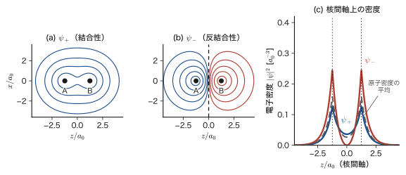
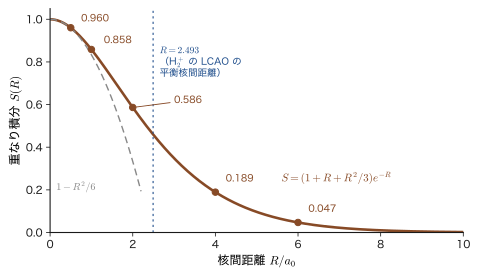
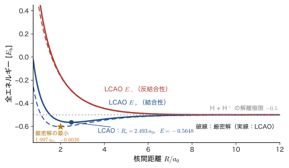
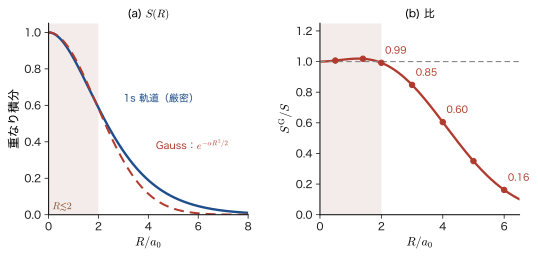
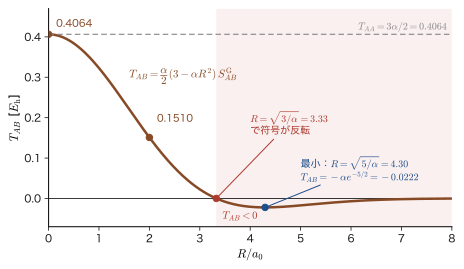

第39章化学結合（2）— 分子軌道法・水素分子イオン・重なり積分
水素原子 2 個が近づくと，なぜ 1 個の水素分子 $\mathrm{H_2}$ になって，ばらばらでいるより安定になるのだろうか．高校の化学では「電子を共有して電子対をつくる」と習う．前章（第38章）で学んだ原子価結合法（VB 法）は，まさにこの絵を量子力学の言葉に直したもので，「結合ごとに電子対を割り当てる」考え方である．この章では，それとは反対の出発点をとる．分子軌道法（MO 法）では，電子を特定の結合に割り当てず，分子全体に広がる 1 つの軌道の中に入れる．原子の中の電子が原子軌道（1s，2p，…）に入っていたように，分子の中の電子は分子軌道に入る，と考えるのである．
古典物理には，この問題に答えられる道具がない．点電荷を静止したまま安定に並べることはできない（Earnshaw の定理）ので，陽子 2 個と電子 1 個を Coulomb 力だけで安定な集まりにする絵は，古典力学からは出てこない．量子力学では，電子が波として 2 つの陽子のまわりに広がり，2 つの原子軌道が同位相で重なると，核の間に電子が集まってエネルギーが下がる（結合性軌道）．逆位相で重なると，核の間に節ができてエネルギーが上がる（反結合性軌道）．この「重なる」ことの大きさを 1 つの数で表したものが重なり積分 $S$ である．結合の強さも，反結合性軌道の不安定さも，$S$ に強く依存する．
この章では，最も単純な分子である水素分子イオン $\mathrm{H_2^+}$（陽子 2 個と電子 1 個）を，分子軌道法で丁寧に扱う．$\mathrm{H_2^+}$ は電子どうしの反発がないので，Schrödinger 方程式を（本来は）厳密に解ける．それでもあえて，原子軌道の 1 次結合（LCAO）という近似を使うのは，この近似が，すべての分子・固体の電子状態計算（第37章の Roothaan–Hall 方程式，姉妹編「マテリアル計算科学（AD 05）」，第41章以降のバンド理論）の出発点になっているからである．重なり積分 $S(R)$ は，同焦点楕円体座標という 2 中心問題に特有の座標系を使って，途中の式をすべて書きながら手計算する．
さらに，Gauss 関数を使うと，座標変換なしに平方完成だけで同じ積分（と運動エネルギーの積分）が計算でき，それが現代の計算化学の標準になっていることを確かめる．
- 分子軌道法の考え方（電子は分子全体に広がる）と，原子価結合法との違い．$\mathrm{H_2}$ の分子軌道による波動関数が，共有項とイオン項を同じ重みで含むこと
- $\mathrm{H_2^+}$ の Schrödinger 方程式（Born–Oppenheimer 近似で核を固定）と，同焦点楕円体座標で変数分離できること．厳密解の値（$R_{\mathrm e}=2.00\,a_0$，$D_{\mathrm e}=2.79\ \mathrm{eV}$）
- LCAO 近似 $\psi_\pm=C_\pm(\phi_A\pm\phi_B)$ と規格化定数 $C_\pm=1/\sqrt{2(1\pm S)}$．結合性軌道・反結合性軌道の形と，線形変分法（永年方程式）による $E_\pm$
- 同焦点楕円体座標 $(\mu,\nu,\varphi)$ の定義，ヤコビアン（体積要素）を 3×3 行列式から導くこと，重なり積分 $S=(1+R/a_0+R^2/3a_0^2)\,e^{-R/a_0}$ を $u=\cosh\mu$ の置換で手計算すること
- $\mathrm{H_2^+}$ の LCAO のエネルギー曲線 $E_\pm(R)$：Coulomb 型・共鳴型の積分 $J'$，$K'$ の導出，$R_{\mathrm e}=2.493\,a_0$，$D_{\mathrm e}=1.76\ \mathrm{eV}$，振動の波数 $1816\ \mathrm{cm^{-1}}$
- Gauss 積の定理と，Gauss 関数による重なり積分 $S_{AB}$．運動エネルギーの行列要素 $T_{AB}=\dfrac{\alpha_A\alpha_B}{\alpha_A+\alpha_B}\Bigl(3-\dfrac{2\alpha_A\alpha_B}{\alpha_A+\alpha_B}R^2\Bigr)S^{\mathrm G}_{AB}$ の導出．核との引力（Boys 関数）と STO-1G（1s の Slater 型軌道 $e^{-\zeta r/a_0}$ を 1 本の Gauss 関数で近似した基底，第32章）による $\mathrm{H_2^+}$
もとにしたノート：望月泰英『物理学ノート 量子力学3』 pp. 81–86．
39.1 分子軌道法の考え方 — 電子は分子全体に広がる
39.1.1 分子軌道法とは
前章の原子価結合法（VB 法）では，電子を結合ごとに割り当てた．たとえば $\mathrm{H_2}$ なら，水素原子 A の 1s 軌道に電子 1 が，水素原子 B の 1s 軌道に電子 2 が入り，その 2 個が「対」をつくって結合になる，と考える．結合をつくる電子は，はじめから 2 つの原子に「所属」している．
分子軌道法（molecular orbital method，MO 法）では，電子は特定の結合に属しているとはみなさず，分子全体に広がっているものとして扱う．原子の中の電子が，原子核 1 個がつくる場の中の 1 電子波動関数（原子軌道，atomic orbital，AO）に入っていたのと同じように，分子の中の電子は，複数の原子核がつくる場の中の 1 電子波動関数，すなわち分子軌道（molecular orbital，MO）に入る，と考えるのである．
定義39.1 分子軌道と LCAO 近似
分子に含まれる複数の原子核の場（と，他の電子がつくる平均の場）の中を動く電子 1 個の波動関数 $\psi_i(\bm{r})$ を分子軌道という．本書では，分子軌道を $\psi_i$，原子軌道（基底関数）を $\phi_\mu$ と書く．分子軌道を原子軌道の 1 次結合
$$ \psi_i(\bm{r})=\sum_{\mu}c_{\mu i}\,\phi_\mu(\bm{r}) \qquad(c_{\mu i}\text{ は展開係数}) $$で近似する方法を，LCAO（linear combination of atomic orbitals，原子軌道の 1 次結合）近似という．
分子のうち最も単純なものが，陽子 2 個と電子 1 個からなる水素分子イオン $\mathrm{H_2^+}$ である．この分子は，結合の本質的な特徴（結合性軌道と反結合性軌道，重なり積分，共鳴の効果）をすべて含んでおり，しかも電子どうしの反発がないので，計算のすべての段階を追うことができる．$\mathrm{H_2^+}$ の LCAO で学ぶ道具（永年方程式，重なり積分，基底関数）は，そのまま複雑な分子や固体の構造を調べる道具になる．この章の主役は $\mathrm{H_2^+}$ である．
記号：$\phi$ と $\psi$，核からの距離
本書では，原子軌道と基底関数に $\phi_\mu$，1 電子の固有関数・分子軌道に $\psi_i$ を使う（第VII部の約束）．方位角は $\varphi$ で，波動関数の $\phi$ とは別の文字である．この章で $\phi_A$，$\phi_B$ と書くのは，原子核 A，B のまわりの水素原子の 1s 軌道
$$ \phi_A(\bm{r})=\phi_{1s}(r_A)=\frac{1}{\sqrt{\pi a_0^3}}\,e^{-r_A/a_0},\qquad \phi_B(\bm{r})=\phi_{1s}(r_B),\qquad r_A=\abs{\bm{r}-\bm{R}_A},\ \ r_B=\abs{\bm{r}-\bm{R}_B} $$である．$r_A$，$r_B$ は，電子の位置 $\bm r$ から原子核 A，B までの距離で，電子の番号ではない．また，本書では電気素量を $e_0$，Bohr 半径を $a_0=4\pi\varepsilon_0\hbar^2/(m_{\mathrm e}e_0^2)$ と書く．関連シミュレーターでは Bohr 半径を $a_{\mathrm B}$ と書くが，同じ量である．原子単位（第33章）では $a_0=1$ とする．核間距離は $R=\abs{\bm{R}_A-\bm{R}_B}$ である．
39.1.2 $\mathrm{H_2}$ で見る分子軌道法と原子価結合法の違い
2 つの方法の違いは，電子が 2 個ある水素分子 $\mathrm{H_2}$ で最もはっきりする．次節以降で詳しく扱う結合性軌道（2 つの 1s 軌道の和）
$$ \psi_+(\bm{r})=C_+\bigl(\phi_A(\bm{r})+\phi_B(\bm{r})\bigr) $$に，スピンが逆向きの 2 個の電子を入れたとしよう（$C_+$ は規格化定数）．電子 1，電子 2 の空間部分は $\psi_+(1)\,\psi_+(2)$ である．これを展開すると，
\begin{equation} \psi_+(1)\,\psi_+(2)=C_+^2\Bigl\{\underbrace{\bigl[\phi_A(1)\phi_B(2)+\phi_B(1)\phi_A(2)\bigr]}_{\text{共有項}}+\underbrace{\bigl[\phi_A(1)\phi_A(2)+\phi_B(1)\phi_B(2)\bigr]}_{\text{イオン項}}\Bigr\} \label{eq:39-mo-expand} \end{equation}となる（$\phi_A(1)$ は，電子 1 が原子核 A のまわりの 1s 軌道に入っていることを表す）．中身を見ると，右辺の 4 つの項は，2 個の電子を 2 つの原子核に割り当てる 4 通りの方法（図39.1）にすべて対応し，しかも同じ係数で足されている．
- 共有項：電子 1 個が原子 A に，もう 1 個が原子 B にいる（$\phi_A(1)\phi_B(2)$ と $\phi_B(1)\phi_A(2)$）．これは前章の Heitler–London の波動関数（原子価結合法の $\mathrm{H_2}$）そのものである．
- イオン項：2 個の電子が同じ原子核のまわりにいる（$\phi_A(1)\phi_A(2)$ と $\phi_B(1)\phi_B(2)$）．すなわち $\mathrm{H^-H^+}$ と $\mathrm{H^+H^-}$ というイオン対の状態である．
つまり，分子軌道法の $\mathrm{H_2}$ の波動関数は，共有結合の項とイオン結合の項を同じ重み（50 %ずつ）で含む．一方，原子価結合法の波動関数は共有項だけである．ここで「50 %ずつ」というのは，式 \eqref{eq:39-mo-expand} の 4 つの項が同じ係数をもつという意味で，重なり積分 $S$ が小さい（核間距離 $R$ が大きい）ときには，共有項とイオン項がほぼ直交するので，確率としての重みもほぼ 50 %ずつになる．
考察：どちらの方法も，結合を「半分だけ」正しく表している
核間距離 $R$ を大きくして 2 個の水素原子に引き離す（解離させる）と，正しい波動関数は，どちらかの原子に電子がもう 1 個ずつ，すなわち共有項だけになるはずである（一方の原子だけに 2 個の電子が集まって $\mathrm{H^-}$ になるには，エネルギーが余計にかかるから）．したがって，イオン項を 50 %含んだままの分子軌道法の波動関数は，結合を切る極限で誤りになる．一方，平衡の核間距離の近くでは，実際の分子には電子が少し他方の原子の側に寄ったイオン的な成分があるので，イオン項を全く含まない原子価結合法の波動関数は，結合を少し過小評価する．
2 つの方法を完全に「最適化」すると，どちらの方法でも同じ波動関数に行き着く．すなわち，共有項とイオン項の重みを固定せず，エネルギーが最小になるように決めれば，分子軌道法と原子価結合法は同じ結果になる．この意味で，2 つの方法は同じ理論の出発点が違うだけであり，分子軌道法は「イオン項が多すぎる」ほうから，原子価結合法は「イオン項がなさすぎる」ほうから，正解に近づいていく．
| 波動関数 | $R_{\mathrm e}$（$a_0$） | $R_{\mathrm e}$（Å） | $D_{\mathrm e}$（eV） | $R=8\,a_0$ のエネルギー（$E_{\mathrm h}$） |
|---|---|---|---|---|
| 原子価結合法（共有項のみ） | 1.647 | 0.872 | 3.19 | $-0.9898$ |
| 分子軌道法（共有項＋イオン項，同じ重み） | 1.610 | 0.852 | 2.74 | $-0.7452$ |
| 2 つの項の重みを最適化（共有項＋イオン項） | 1.674 | 0.886 | 3.27 | $-0.9898$ |
| 実験 | 1.401 | 0.741 | 4.75 | $-1.0000$（$=2\times(-\tfrac12)$） |
表39.1 で，$D_{\mathrm e}$ は，2 個の水素原子に解離した状態のエネルギーからの下がりである（1s 軌道を 3 本の Gauss 関数で表す近似（STO-3G）の水素原子のエネルギー $-0.4949\,E_{\mathrm h}$ の 2 倍を基準にした）．どちらの方法も実験の $D_{\mathrm e}=4.75\ \mathrm{eV}$ の 6〜7 割にしかならない．これは，1s 軌道の広がりを $\zeta=1$（孤立した水素原子と同じ）に固定したためで，分子の中では軌道が縮む効果や，電子の相関が抜けているからである（軌道の縮みは 39.5 節で調べる）．それでも，「共有項のほうがエネルギーが低く，分子軌道法のほうが少し高い」「$R=8\,a_0$ まで引き離すと，原子価結合法は 2 個の水素原子のエネルギー（$-0.9898$）になるのに，分子軌道法は $-0.7452$ と，$0.24\,E_{\mathrm h}$（$6.6\ \mathrm{eV}$）も高い」という違いが，はっきり現れている．なお，$R=8\,a_0$ の値は $R\to\infty$ の極限値ではない．分子軌道法の波動関数のイオン項には，$\mathrm{H^-}$ と $\mathrm{H^+}$ の間に Coulomb 引力 $-1/R$ がはたらき，その半分（イオン項の重み）だけエネルギーが下がるからである（極限値は例題39.1）．
例題39.1 分子軌道法の $\mathrm{H_2}$ を解離させると何が起こるか
核間距離 $R\to\infty$ で，2 つの 1s 軌道の重なりは $S\to0$ である．式 \eqref{eq:39-mo-expand} の分子軌道法の波動関数について，(1) 共有項とイオン項をそれぞれ規格化した関数 $\Phi_{\mathrm{cov}}$，$\Phi_{\mathrm{ion}}$ で書き，(2) 2 個の電子のエネルギー期待値を，$\zeta=1$ の 1s 軌道（原子単位）を使って求めよ．ただし，$\mathrm{H^-}$ に当たる状態のエネルギーは，2 個の電子が同じ 1s 軌道 $\phi_{1s}$ に入った積 $\phi_{1s}(1)\phi_{1s}(2)$ の期待値とし，$\displaystyle\iint\frac{\abs{\phi_{1s}(1)}^2\abs{\phi_{1s}(2)}^2}{r_{12}}\dd\bm{r}_1\dd\bm{r}_2=\dfrac58\,E_{\mathrm h}$（第31章）を使え．また，2 個の水素原子に解離した正しいエネルギー（$-1\,E_{\mathrm h}$）との差を eV で求めよ．
解答 (1) $S\to0$ のとき，$\phi_A$ と $\phi_B$ は直交し，$C_+\to1/\sqrt2$ である．共有項 $\phi_A(1)\phi_B(2)+\phi_B(1)\phi_A(2)$ の規格化の積分は，$\phi_A(1)\phi_B(2)$ と $\phi_B(1)\phi_A(2)$ が直交する（$\braket{\phi_A}{\phi_B}=S\to0$）ので $1+1=2$ になる．よって $\Phi_{\mathrm{cov}}=\dfrac{1}{\sqrt2}\bigl[\phi_A(1)\phi_B(2)+\phi_B(1)\phi_A(2)\bigr]$．イオン項も同様に $\Phi_{\mathrm{ion}}=\dfrac{1}{\sqrt2}\bigl[\phi_A(1)\phi_A(2)+\phi_B(1)\phi_B(2)\bigr]$ である．式 \eqref{eq:39-mo-expand} に $C_+^2=1/2$ を入れると，
$$ \psi_+(1)\psi_+(2)=\frac12\Bigl(\sqrt2\,\Phi_{\mathrm{cov}}+\sqrt2\,\Phi_{\mathrm{ion}}\Bigr)=\frac{1}{\sqrt2}\bigl(\Phi_{\mathrm{cov}}+\Phi_{\mathrm{ion}}\bigr) $$となり，共有項とイオン項がちょうど 50 %ずつである（$(1/\sqrt2)^2=1/2$）．
(2) $R\to\infty$ では $\Phi_{\mathrm{cov}}$ と $\Phi_{\mathrm{ion}}$ の間のハミルトニアンの行列要素は 0 になる（一方は電子が別々の原子に，他方は同じ原子にいるので，電子 1 個の移動が必要だが，$R\to\infty$ では重なりが 0 で，その移動を起こす積分が消える）．すると，$E=\tfrac12\bigl(E_{\mathrm{cov}}+E_{\mathrm{ion}}\bigr)$ である．共有項は，離れた 2 個の水素原子の状態なので $E_{\mathrm{cov}}=2\times\bigl(-\tfrac12\bigr)=-1\,E_{\mathrm h}$．イオン項は，一方の原子に 2 個の電子が入った $\mathrm{H^-}$（陽子 1 個のまわりに電子 2 個）と，遠くの裸の陽子 $\mathrm{H^+}$ の組で，$\mathrm{H^-}$ の側は，1 電子のエネルギー $2\times(-\tfrac12)$ に電子間反発 $\tfrac58$ を足して，$E_{\mathrm{ion}}=-1+\tfrac58=-\tfrac38\,E_{\mathrm h}$ となる（裸の陽子は電子をもたず，遠く離れているのでエネルギーは 0）．したがって
$$ E_{\mathrm{MO}}(R\to\infty)=\frac12\Bigl(-1-\frac38\Bigr)=-\frac{11}{16}\,E_{\mathrm h}=-0.6875\,E_{\mathrm h} $$である．正しい解離極限 $-1\,E_{\mathrm h}$ との差は $\dfrac{5}{16}\,E_{\mathrm h}=0.3125\times27.2114\ \mathrm{eV}=8.50\ \mathrm{eV}$ で，これは電子間反発のエネルギー $\tfrac58\,E_{\mathrm h}$ の半分にあたる（イオン項が 50 %だから）．
有限の $R$ では，イオン項の $\mathrm{H^-}$ と $\mathrm{H^+}$ の間に Coulomb 引力 $-1/R$ がはたらき，その半分（イオン項の重み）が加わって，$R$ が大きいとき $E_{\mathrm{MO}}(R)\approx-\dfrac{11}{16}-\dfrac{1}{2R}$ となる（$R=8\,a_0$ で約 $-0.75\,E_{\mathrm h}$）．表39.1 の $R=8\,a_0$ の $-0.7452$ は STO-3G の計算値で，STO-3G の $\mathrm{H^-}$ の電子間反発は $5/8$ ではなく $0.6247\,E_{\mathrm h}$，水素原子のエネルギーは $-0.4949\,E_{\mathrm h}$ なので，共有項のエネルギー $2\times(-0.4949)=-0.9898$ と，イオン項のエネルギー $-0.9898+0.6247=-0.3651$ を平均した $R\to\infty$ の極限は $-0.6775\,E_{\mathrm h}$ で，$-11/16$ とは違う値になる．$R=8\,a_0$ では，これにほぼ $-1/(2R)=-0.0625$ が加わって $-0.7400$ となり，表39.1 の $-0.7452$ に近い（残りは，重なりが残っていることによる補正）．厳密な 1s 軌道の極限 $-11/16$ と STO-3G の極限 $-0.6775$ は，別の近似の別の値である．
応用：分子軌道の考え方が固体のバンド理論へ続く
分子軌道法は，歴史的には 1920 年代末に Hund と Mulliken が導入し，Lennard-Jones が原子軌道の 1 次結合（LCAO）の形を与え，Hückel が 1931 年に $\pi$ 電子系（ベンゼンなど）に適用して広めた．原子価結合法（Heitler–London，1927）は電子対結合の直観にすぐれ，分子軌道法は，分子全体に広がる電子の状態を扱えるので，共役分子の色（第10章 10.8），電子が広がった金属や半導体，配位子場理論（第VIII部）の理解に向いている．原子が 2 個のとき 2 本の軌道（結合性と反結合性）だった準位が，$N$ 個の原子を並べると $N$ 本になり，$N$ が大きいとき帯（バンド）になる．第41章以降のバンド理論は，この章の $\mathrm{H_2^+}$ の LCAO を $N$ 原子鎖に拡張したものである．関連シミュレーター：分子軌道からバンドへ．
39.2 水素分子イオン $\mathrm{H_2^+}$ の Schrödinger 方程式
39.2.1 電子の Schrödinger 方程式
陽子 2 個（原子核 A，B）と電子 1 個からなる $\mathrm{H_2^+}$ を考える．原子核どうしの距離を $R$，電子から原子核 A，B までの距離をそれぞれ $r_A$，$r_B$ とする（図39.2）．電子は 1 個だけなので，電子の番号は省く．
近似：Born–Oppenheimer 近似 — 原子核は止まっていると考える
原子核は電子よりずっと重く（陽子の質量は電子の約 1836 倍），電子が $1000\ \mathrm{pm}$ 動く間に原子核は $1\ \mathrm{pm}$ 程度（桁の目安）しか動かない．そこで，原子核は止まっているとして，電子の運動だけを考える．これを Born–Oppenheimer 近似という（詳しくは第33章 33.2 節）．このとき $R$ は変数ではなく，電子の方程式に含まれるパラメーターになる．電子のエネルギーを $R$ の関数として求めれば，それが原子核にとってのポテンシャルエネルギー曲線になる（33.3 節）．
この近似のもとで，$\mathrm{H_2^+}$ の電子の Schrödinger 方程式は，次のようになる．
\begin{equation} -\frac{\hbar^2}{2m_{\mathrm e}}\nabla^2\psi-\frac{e_0^2}{4\pi\varepsilon_0}\left(\frac{1}{r_A}+\frac{1}{r_B}-\frac{1}{R}\right)\psi=E\,\psi \label{eq:39-h2plus} \end{equation}左辺の第 1 項は電子の運動エネルギー，第 2 項は，電子と原子核 A，B の間の Coulomb 引力 $-\dfrac{e_0^2}{4\pi\varepsilon_0}\dfrac1{r_A}$，$-\dfrac{e_0^2}{4\pi\varepsilon_0}\dfrac1{r_B}$ と，2 個の陽子の間の Coulomb 反発 $+\dfrac{e_0^2}{4\pi\varepsilon_0}\dfrac1R$（$R$ を固定したときの定数）の和である．$r_A$，$r_B$ は，電子の位置から 2 つの原子核までの距離である．したがって，$E$ は，電子のエネルギーに原子核どうしの反発を加えた全エネルギーである．
原子単位（第33章．長さの単位 $a_0$，エネルギーの単位 $E_{\mathrm h}=e_0^2/(4\pi\varepsilon_0a_0)=\hbar^2/(m_{\mathrm e}a_0^2)$）で書くと，式 \eqref{eq:39-h2plus} は
\begin{equation} \Bigl[-\frac12\nabla^2-\frac{1}{r_A}-\frac{1}{r_B}+\frac{1}{R}\Bigr]\psi=E\,\psi \label{eq:39-h2plus-au} \end{equation}となる（例題39.3）．この方程式は，2 つの $1/r$ ポテンシャルの重ね合わせの中を動く電子 1 個の問題で，他の電子との反発がない．
例題39.2 電子と原子核の動く速さ
(1) 水素原子の 1s 軌道の電子の速さを $v_0=\alpha c$（$\alpha$ は微細構造定数）とする．この電子が $1000\ \mathrm{pm}$ 動くのにかかる時間を求めよ．(2) $\mathrm{H_2^+}$ の 2 個の陽子の相対運動を調和振動子とみなし，その波数を $1816\ \mathrm{cm^{-1}}$（39.5 節で求める値），換算質量を $m_{\mathrm{red}}=m_{\mathrm p}/2$ とする（この $m_{\mathrm{red}}$ は換算質量で，39.4 節の座標 $\mu$ とは別のものである）．基底状態（零点振動）の振幅 $x_0=\sqrt{\hbar/(2m_{\mathrm{red}}\omega)}$ と，最大の速さ $\omega x_0$ を求め，(1) の時間の間に原子核が動く距離を見積もれ．
解答 (1) $v_0=\alpha c=7.297\,35\times10^{-3}\times2.997\,92\times10^{8}\ \mathrm{m/s}=2.188\times10^{6}\ \mathrm{m/s}$ である．$1000\ \mathrm{pm}=1.000\times10^{-9}\ \mathrm{m}$ 動くのに
$$ t=\frac{1.000\times10^{-9}\ \mathrm{m}}{2.188\times10^{6}\ \mathrm{m/s}}=4.57\times10^{-16}\ \mathrm{s}\approx0.46\ \mathrm{fs} $$かかる．(2) 角振動数は $\omega=2\pi c\tilde\nu=2\pi\times2.998\times10^{10}\ \mathrm{cm/s}\times1816\ \mathrm{cm^{-1}}=3.42\times10^{14}\ \mathrm{s^{-1}}$，換算質量は $m_{\mathrm{red}}=m_{\mathrm p}/2=8.363\times10^{-28}\ \mathrm{kg}$ である．よって
$$ x_0=\sqrt{\frac{\hbar}{2m_{\mathrm{red}}\omega}}=\sqrt{\frac{1.0546\times10^{-34}}{2\times8.363\times10^{-28}\times3.42\times10^{14}}}\ \mathrm{m}=1.36\times10^{-11}\ \mathrm{m}=13.6\ \mathrm{pm},\qquad \omega x_0=4.6\times10^{3}\ \mathrm{m/s} $$である．時間 $t=0.46\ \mathrm{fs}$ の間に，原子核は最大でも $4.6\times10^{3}\times4.57\times10^{-16}\ \mathrm{m}=2.1\times10^{-12}\ \mathrm{m}=2.1\ \mathrm{pm}$ しか動かない．電子が $1000\ \mathrm{pm}$ 動く間に，原子核は 1 pm 程度（数 pm 以下）で，速さの比は約 $470$ である．同じ運動エネルギーをもつ電子と陽子の速さの比は $\sqrt{m_{\mathrm p}/m_{\mathrm e}}=\sqrt{1836}=42.9$ だが，分子の中の陽子の運動エネルギー（零点振動のエネルギー約 $0.11\ \mathrm{eV}$ の半分程度）は，電子の運動エネルギー（約 $13.6\ \mathrm{eV}$）よりずっと小さいので，速さの比がさらに開く．したがって，原子核を止めて電子の方程式を解く Born–Oppenheimer 近似は，$\mathrm{H_2^+}$ でも非常によい近似である．
39.2.2 厳密に解けるが，解の形が複雑
式 \eqref{eq:39-h2plus-au} は，他の電子との反発がないので，解析的に解くことができる．実は，2 つの原子核を焦点とする同焦点楕円体座標（39.4 節で詳しく定義する）$\xi=(r_A+r_B)/R$，$\eta=(r_A-r_B)/R$ と方位角 $\varphi$ を使うと，変数分離ができる（39.4 節の座標 $(\mu,\nu,\varphi)$ とは $\xi=\cosh\mu$，$\eta=\cos\nu$ の関係にある．$\xi\ge1$，$-1\le\eta\le1$）．$\psi=X(\xi)\,Y(\eta)\,e^{im\varphi}$ とおき，$q^2=-E_{\mathrm{el}}R^2/2$（$E_{\mathrm{el}}$ は原子核どうしの反発を除いた電子のエネルギー，$E=E_{\mathrm{el}}+1/R$．この $q$ は，39.6 節の Gauss 関数の指数の和 $p=\alpha_A+\alpha_B$ とは別の量）とすると，$m=0$（核を結ぶ軸のまわりの角運動量が 0 の状態で，$\sigma$ 状態という）では，原子単位（長さは $a_0$，エネルギーは $E_{\mathrm h}$ を単位とし，$R$ も $a_0$ を単位とした核間距離）で，2 つの常微分方程式
\begin{equation} \diff{}{\xi}\Bigl[(\xi^2-1)\diff{X}{\xi}\Bigr]+\bigl(2R\xi-q^2\xi^2\bigr)X=\lambda X,\qquad \diff{}{\eta}\Bigl[(1-\eta^2)\diff{Y}{\eta}\Bigr]+q^2\eta^2\,Y=-\lambda Y \label{eq:39-separated} \end{equation}が得られる（$\lambda$ は分離定数．$m\ne0$ では，左右の式にそれぞれ $-m^2/(\xi^2-1)$，$-m^2/(1-\eta^2)$ が加わる）．$X$ が $\xi=1$ で有限で $\xi\to\infty$ で 0 になること，$Y$ が $\eta=\pm1$ で有限であることという境界条件から，許される $(q,\lambda)$ が決まる．解は無限級数（Laguerre 関数と Legendre 関数の展開）で書かれ，数値的には任意の桁まで求まる．核間距離 $R=2.0\,a_0$ での電子と原子核を合わせた全エネルギーは，正確には $E=-0.602\,634\,E_{\mathrm h}$ である．
$\mathrm{H_2^+}$ の厳密解の値（Born–Oppenheimer 近似のもと）
エネルギー曲線 $E(R)$ は $R_{\mathrm e}=1.997\,a_0$（$1.057\ \text{Å}$）で最小 $E=-0.602\,635\,E_{\mathrm h}$ をとる．解離極限 $\mathrm{H}+\mathrm{H^+}$（$-0.5\,E_{\mathrm h}$）からの下がり，すなわち結合エネルギーは $D_{\mathrm e}=0.102\,635\,E_{\mathrm h}=2.793\ \mathrm{eV}$，振動の波数は約 $2.32\times10^{3}\ \mathrm{cm^{-1}}$ である．次節以降の LCAO 近似は，これらの値を（$R_{\mathrm e}$ は約 25 %長く，$D_{\mathrm e}$ は約 37 %小さく，波数は約 22 %低く）近似する．
ところが，この厳密解は，複雑な分子には使えない．理由は 2 つある．1 つは，解の形が無限級数の形をしていて，計算のためには数値的に扱うしかなく，「軌道」として人間が眺めたり，別の分子に転用したりしにくいことである．もう 1 つは，同焦点楕円体座標で変数分離できるのが，「電子 1 個 + 原子核 2 個」という，特別な問題だけだからである．電子が 2 個以上になると電子間の反発 $1/r_{12}$ のせいで変数が分離できなくなり，原子核が 3 個以上でも分離できない．そこで，複雑な分子には，解の形を仮定して近似する方法（変分法，第30章）を使う．$\mathrm{H_2^+}$ の LCAO 近似は，その最も簡単な例である．
例題39.3 $\mathrm{H_2^+}$ を原子単位に直す．$R\to\infty$ と $R\to0$ の極限
(1) 式 \eqref{eq:39-h2plus} から式 \eqref{eq:39-h2plus-au} を導け．(2) $R\to\infty$ と $R\to0$ の極限で，$\mathrm{H_2^+}$ の全エネルギー $E$ がそれぞれどうなるかを，物理的に考えて答えよ．
解答 (1) 長さを $\bm{r}=a_0\tilde{\bm r}$，$R=a_0\tilde R$，$r_A=a_0\tilde r_A$，$r_B=a_0\tilde r_B$ とおく（$\tilde{\ }$ は無次元）．$\nabla^2=a_0^{-2}\tilde\nabla^2$ なので，式 \eqref{eq:39-h2plus} は
$$ -\frac{\hbar^2}{2m_{\mathrm e}a_0^2}\tilde\nabla^2\psi-\frac{e_0^2}{4\pi\varepsilon_0a_0}\Bigl(\frac1{\tilde r_A}+\frac1{\tilde r_B}-\frac1{\tilde R}\Bigr)\psi=E\psi $$となる．ここで $\dfrac{\hbar^2}{m_{\mathrm e}a_0^2}=\dfrac{e_0^2}{4\pi\varepsilon_0a_0}=E_{\mathrm h}$（$a_0=4\pi\varepsilon_0\hbar^2/(m_{\mathrm e}e_0^2)$ から）だから，$E_{\mathrm h}\Bigl[-\tfrac12\tilde\nabla^2-\tfrac1{\tilde r_A}-\tfrac1{\tilde r_B}+\tfrac1{\tilde R}\Bigr]\psi=E\psi$．両辺を $E_{\mathrm h}$ で割り，$\tilde E=E/E_{\mathrm h}$ とすれば，式 \eqref{eq:39-h2plus-au} が得られる（以下，$\tilde{\ }$ は省く）．
(2) $R\to\infty$：電子は，一方の陽子（たとえば A）のまわりに束縛され，水素原子になる．もう一方の陽子 B は遠いので，電子への引力 $-1/r_B\to0$，陽子どうしの反発 $1/R\to0$ である．よって $E\to-\tfrac12\,E_{\mathrm h}=-13.6\ \mathrm{eV}$（水素原子の基底状態のエネルギー）．$R\to0$：2 個の陽子が重なって，電荷 $Z=2$ の 1 個の原子核（$\mathrm{He^+}$ の核）になり，電子のエネルギーは $\mathrm{He^+}$ の基底状態 $-Z^2/2=-2\,E_{\mathrm h}$ に近づく（united atom の極限）．ただし，陽子どうしの反発 $+1/R$ は無限大になるので，全エネルギー $E=\varepsilon+1/R$ は $+\infty$ に発散する．したがって，$E(R)$ は，$R\to0$ で $+\infty$，$R\to\infty$ で $-0.5\,E_{\mathrm h}$ へ近づくので，その間に極小がありうる（実際にある，図39.7）．
39.3 LCAO 近似と規格化 — 結合性軌道と反結合性軌道
39.3.1 原子軌道の和と差 — なぜこの形を仮定するのか
前節の方程式は厳密に解けるが，複雑で応用しにくい．そこで，解の形を「うまく仮定する」ことにする．核間距離 $R$ が十分大きいとき，電子は，核 A のまわりの水素原子の 1s 軌道 $\phi_A$ にいるか，核 B のまわりの 1s 軌道 $\phi_B$ にいるかのどちらかであるはずだが，2 つの核は同じなので，どちらにいるとも決められない．そこで，2 つの 1s 軌道の 1 次結合を試すことにする．
係数の比は，対称性から決まる．2 つの核の中点を原点にとり，電子の位置ベクトルを原点についての反転 $\bm{r}\to-\bm{r}$ で入れ替える演算 $\hat{\imath}$（反転，inversion）を考える．$\mathrm{H_2^+}$ のハミルトニアンは，2 つの核を入れ替えても変わらないので，$\hat{\imath}$ と交換する：$\comm{\hat{H}}{\hat{\imath}}=0$．したがって，固有関数は，$\hat{\imath}\psi=+\psi$（偶：gerade，ドイツ語で「偶数の」の意味．$g$ と書く）か $\hat{\imath}\psi=-\psi$（奇：ungerade，「奇数の」の意味．$u$ と書く）のどちらかに分けられる．球対称な 1s 軌道では $\hat{\imath}\phi_A=\phi_B$，$\hat{\imath}\phi_B=\phi_A$ だから，
$$ \hat{\imath}\,(\phi_A+\phi_B)=+(\phi_A+\phi_B)\quad(g),\qquad \hat{\imath}\,(\phi_A-\phi_B)=-(\phi_A-\phi_B)\quad(u) $$である．2 つの 1s 軌道から作れる，反転に対して偶か奇の関数は，和と差の 2 つだけである．
定義39.2 結合性軌道と反結合性軌道（LCAO 近似）
2 つの原子軌道 $\phi_A$，$\phi_B$ の和と差
\begin{equation} \psi_+(\bm{r})=C_+\bigl(\phi_A(\bm{r})+\phi_B(\bm{r})\bigr),\qquad \psi_-(\bm{r})=C_-\bigl(\phi_A(\bm{r})-\phi_B(\bm{r})\bigr) \label{eq:39-lcao} \end{equation}を，それぞれ結合性軌道（bonding orbital）と反結合性軌道（antibonding orbital）という（$C_\pm$ は規格化定数）．原子軌道の 1 次結合による分子軌道の近似である．偶奇（$g$，$u$）と，核を結ぶ軸のまわりの角運動量が 0 であること（$\sigma$）を合わせて，$\psi_+$ を $\sigma_g$ 軌道，$\psi_-$ を $\sigma_u$ 軌道ともいう．
結合性軌道は，2 つの原子軌道が同位相で足し合わされ，核の間で強め合う．反結合性軌道は逆位相で足し合わされ，核から等距離の面（2 つの核を結ぶ線分の垂直二等分面）$\phi_A=\phi_B$ で打ち消し合い，そこに節面ができる．$\psi_-$ が節面をもつので，第10章で見た箱の中の粒子（節が 1 個多い状態が，エネルギーが高い）と同じく，反結合性軌道のほうがエネルギーが高い．
39.3.2 規格化と重なり積分 $S$
係数 $C_\pm$ は，Born の確率解釈から，電子が空間のどこかにいる確率が 1 になる条件（規格化条件）で決める：
\begin{equation} \int_{\text{全空間}}\abs{\psi_\pm}^2\dd V=1 \label{eq:39-norm-cond} \end{equation}ここで，1s 軌道 $\phi_A$，$\phi_B$ は，正の実数の値をとる関数である（$\phi_{1s}\propto e^{-r/a_0}\gt 0$）．したがって，絶対値の 2 乗は，単に 2 乗にできて，
$$ \abs{\psi_\pm}^2=C_\pm^2\,\abs{\phi_A\pm\phi_B}^2=C_\pm^2\bigl(\phi_A^2\pm2\phi_A\phi_B+\phi_B^2\bigr) $$となる．これを全空間で積分する．各項は，1s 軌道が規格化されていること，
$$ \int\phi_A^2\dd V=1,\qquad \int\phi_B^2\dd V=1 $$と，次の量で表される．
定義39.3 重なり積分
2 つの原子軌道 $\phi_A$，$\phi_B$ の重なり積分（overlap integral）を
\begin{equation} S\equiv\int_{\text{全空間}}\phi_A(\bm{r})\,\phi_B(\bm{r})\dd V=\braket{\phi_A}{\phi_B} \label{eq:39-S-def} \end{equation}と定義する．$S$ は，2 つの軌道が，結合するときにどの程度重なっているかを表す．$\phi_A$，$\phi_B$ が正の関数なら，$0\lt S\lt1$ である．核間距離 $R$ の関数 $S(R)$ で，$R\to0$ で（2 つの軌道が完全に重なるので）$S\to1$，$R\to\infty$ で $S\to0$ となる．
この定義を使うと，規格化条件 \eqref{eq:39-norm-cond} は，
$$ 1=C_\pm^2\Bigl(\int\phi_A^2\dd V\pm2\int\phi_A\phi_B\dd V+\int\phi_B^2\dd V\Bigr)=C_\pm^2\bigl(1\pm2S+1\bigr)=2C_\pm^2\,(1\pm S) $$となる．よって次の結果を得る．
公式39.1 LCAO の規格化定数
\begin{equation} C_\pm=\frac{1}{\sqrt{2\,(1\pm S)}} \label{eq:39-Cpm} \end{equation}（複号同順．$C_+$ が結合性，$C_-$ が反結合性の規格化定数．）
Dirac 記法で書くと，$\braket{\psi_\pm}{\psi_\pm}=C_\pm^2\bigl(\braket{\phi_A}{\phi_A}\pm\braket{\phi_A}{\phi_B}\pm\braket{\phi_B}{\phi_A}+\braket{\phi_B}{\phi_B}\bigr)=C_\pm^2(2\pm2S)$ で，同じ結果が得られる（$\braket{\phi_A}{\phi_B}$ は実数なので $\braket{\phi_B}{\phi_A}$ と等しい）．$S\gt0$ なので，$C_+\lt\dfrac{1}{\sqrt2}\lt C_-$ である．すなわち，結合性軌道は，「2 つの軌道の和」が大きくなる分（$\phi_A+\phi_B$ の 2 乗の積分は $2+2S\gt 2$），規格化のために係数が小さくなり，反結合性軌道は，「差」の 2 乗の積分が $2-2S\lt 2$ と小さいので，係数が大きくなる．表39.2 に，$S$ による $C_\pm$ の変化を示す．
| $S$ | $C_+$ | $C_-$ | 備考 |
|---|---|---|---|
| 0 | 0.7071 | 0.7071 | $R\to\infty$（重なりなし） |
| 0.2 | 0.6455 | 0.7906 | $R\approx3.9\,a_0$（$S(3.9)\approx0.2$） |
| 0.4600 | 0.5852 | 0.9623 | $R=2.493\,a_0$（$\mathrm{H_2^+}$ の LCAO の平衡） |
| 0.7529 | 0.5341 | 1.4225 | $R=1.4\,a_0$（$\mathrm{H_2}$ の平衡核間距離） |
| 0.9 | 0.5130 | 2.2361 | $R\approx0.8\,a_0$ |
例題39.4 結合性軌道と反結合性軌道の値を具体的に求める
LCAO の平衡核間距離 $R=R_{\mathrm e}=2.4928\,a_0$（以下では $2.493\,a_0$ と丸めて書く．このとき $S=0.4600$）の $\mathrm{H_2^+}$ で，(1) $C_\pm$ を求めよ．(2) 原子単位で，核 B の位置と 2 つの核の中点での $\psi_\pm$ の値を求めよ．(3) 中点での結合性軌道の電子密度が，2 つの原子の 1s 軌道の電子密度の平均 $\tfrac12(\phi_A^2+\phi_B^2)$ の何倍かを求めよ．
解答 (1) 式 \eqref{eq:39-Cpm} より，$C_+=1/\sqrt{2\times1.4600}=0.5852$，$C_-=1/\sqrt{2\times0.5400}=0.9623$．
(2) 1s 軌道は，原子単位で $\phi_{1s}(r)=e^{-r}/\sqrt\pi$ である．核 B の位置（$r_B=0$，$r_A=R=2.4928$）では $\phi_A=e^{-2.4928}/\sqrt\pi=0.0466$，$\phi_B=1/\sqrt\pi=0.5642$ である．中点（$r_A=r_B=R/2=1.2464$）では，$\phi_A=\phi_B=e^{-1.2464}/\sqrt\pi=0.1622$ である．したがって
$$ \psi_+(\text{核 B})=0.5852\times(0.0466+0.5642)=0.3575,\qquad \psi_-(\text{核 B})=0.9623\times(0.0466-0.5642)=-0.4980 $$ $$ \psi_+(\text{中点})=0.5852\times(0.1622+0.1622)=0.1899,\qquad \psi_-(\text{中点})=0.9623\times(0.1622-0.1622)=0 $$（単位 $a_0^{-3/2}$）である．反結合性軌道は，中点（節面上）でちょうど 0 になる．また，核の位置では反結合性軌道のほうが絶対値が大きい（$C_-$ が大きいため）．
(3) 結合性軌道の中点の密度は $\psi_+^2=0.1899^2=0.03605$，2 つの原子の平均密度は $\tfrac12(0.1622^2+0.1622^2)=0.02632$ だから，比は $1.370$ である．一般に，中点では $\phi_A=\phi_B\equiv\phi_{\mathrm m}$ なので，$\psi_+^2=C_+^2(2\phi_{\mathrm m})^2=\dfrac{4\phi_{\mathrm m}^2}{2(1+S)}=\dfrac{2}{1+S}\,\phi_{\mathrm m}^2$ となり，比は $\dfrac{2}{1+S}=1.370$ である．
39.3.3 線形変分法との関係 — 永年方程式
式 \eqref{eq:39-lcao} の形は，線形変分法（第31章 31.6 節）からも自然に出てくる．試行関数を $\psi=c_A\phi_A+c_B\phi_B$ とおいて，係数 $c_A$，$c_B$ をエネルギーが最小になるように決めると，永年方程式
$$ \begin{vmatrix}H_{AA}-E&H_{AB}-ES\\ H_{AB}-ES&H_{BB}-E\end{vmatrix}=0,\qquad H_{ij}=\mel{\phi_i}{\hat{H}}{\phi_j} $$が得られる．2 つの核が同じなので $H_{BB}=H_{AA}$（対称性）であり，行列式は $(H_{AA}-E)^2-(H_{AB}-ES)^2=0$，すなわち $H_{AA}-E=\pm(H_{AB}-ES)$ となる．上の符号（$+$）のとき $E(1-S)=H_{AA}-H_{AB}$，下の符号（$-$）のとき $E(1+S)=H_{AA}+H_{AB}$ である．それぞれを連立方程式に戻すと，前者は $c_B=-c_A$，後者は $c_B=+c_A$ となる．すなわち，
\begin{equation} E_+=\frac{H_{AA}+H_{AB}}{1+S}\ \ (\psi_+\propto\phi_A+\phi_B),\qquad E_-=\frac{H_{AA}-H_{AB}}{1-S}\ \ (\psi_-\propto\phi_A-\phi_B) \label{eq:39-Epm-general} \end{equation}である．対称性だけで係数の比が決まり，$\pm$ の 2 つの軌道になる（第31章 31.7 節の公式31.2 に当たる）．核が異なる（異核 2 原子分子）と係数の比は対称性だけでは決まらず，永年方程式を実際に解く必要がある（第40章）．積分 $H_{AA}$，$H_{AB}$ の計算は 39.5 節で行う．
記号：$H_{AA}$，$H_{AB}$ と，2 電子積分 $U_{ab}$，$J_{ab}$ は別物
$H_{AA}$（$=\mel{\phi_A}{\hat H}{\phi_A}$）は，電子が原子軌道 $\phi_A$ にいるときのエネルギーの期待値で，Hückel 法では Coulomb 積分 $\alpha$ と呼ぶ．$H_{AB}$（$=\mel{\phi_A}{\hat H}{\phi_B}$）は，電子が A と B の間を行き来する（共鳴する）ことに伴う積分で，共鳴積分 $\beta$ と呼ぶ（第40章．どちらも負で，$\beta\lt 0$）．これらはいずれも電子 1 個のハミルトニアンの行列要素（1 電子積分）である．前章までの $U_{ab}$（Coulomb 積分）と $J_{ab}$（交換積分）は，2 個の電子の反発を表す 2 電子積分で，まったく別の量である．また，この章の後半（39.6 節以降）で Gauss 関数の指数を $\alpha_A$，$\alpha_B$ と書くのは，第32章の指数 $\alpha$，$\beta$ を核 A，B に対応させたもので，$\alpha$，$\beta$ が，スピン関数 $\alpha$，$\beta$（第23章）や Hückel 法の $\alpha$，$\beta$ と紛れないようにするためでもある．この $\alpha_A$，$\alpha_B$ は Gauss 関数の指数（単位 $a_0^{-2}$）であって，次章 40.3 節の異核 2 原子分子の Hückel 法の $\alpha_A$，$\alpha_B$（原子 A，B の軌道エネルギー）とは別の量である．
例題39.5 2 準位の永年方程式を数値で解く
$H_{AA}=H_{BB}=-0.5\,E_{\mathrm h}$，$H_{AB}=-0.3\,E_{\mathrm h}$，$S=0.4$ の 2 つの軌道について，$E_\pm$ と規格化された係数 $c_A=\pm c_B$ の大きさを求めよ．また，$S$ を無視したとき（$E=H_{AA}\pm H_{AB}$）と比べよ．
解答 式 \eqref{eq:39-Epm-general} より
$$ E_+=\frac{-0.5-0.3}{1+0.4}=\frac{-0.8}{1.4}=-0.5714\,E_{\mathrm h},\qquad E_-=\frac{-0.5+0.3}{1-0.4}=\frac{-0.2}{0.6}=-0.3333\,E_{\mathrm h} $$である．係数の大きさは，$C_+=1/\sqrt{2\times1.4}=0.5976$，$C_-=1/\sqrt{2\times0.6}=0.9129$ である．$S$ を無視すると，$E=-0.8,\ -0.2\,E_{\mathrm h}$ で，元の準位（$-0.5$）から対称に $\mp0.3$ だけ離れる．$S=0.4$ を考慮すると，結合性は $-0.5714$ で $0.0714$ しか下がらず，反結合性は $-0.3333$ で $0.1667$ も上がる．反結合性軌道の上がり方のほうが，結合性軌道の下がり方より大きい．これは，重なりがあるとき，分母の $1\pm S$ のせいで，反結合性の準位が持ち上げられるからである（第31章の例題31.15 と同じ現象）．
39.3.4 結合性軌道と反結合性軌道の形
図39.3 に，$R=2.493\,a_0$ の $\psi_+$ と $\psi_-$ の等高線と，核間軸上の電子密度を示す．電子密度は，
\begin{equation} \abs{\psi_\pm}^2=\frac{\phi_A^2+\phi_B^2\pm2\,\phi_A\phi_B}{2\,(1\pm S)} \label{eq:39-density} \end{equation}である．分子の中の電子密度は，2 つの原子の密度の和 $\phi_A^2+\phi_B^2$ と，干渉項 $\pm2\phi_A\phi_B$ からなる．干渉項は，両方の軌道が同時に 0 でない（重なっている）領域，すなわち 2 つの核の間で大きい．結合性軌道（$+$）では，干渉項が正なので，核の間に電子が余分に集まる．反結合性軌道（$-$）では，干渉項が負なので，核の間の電子が減り，中点の面では密度が 0 になる．

39.4 重なり積分の計算 — 同焦点楕円体座標
39.4.1 なぜ特別な座標系が要るのか
重なり積分 $S=\displaystyle\int\phi_A\phi_B\dd V$ の値は，結合するときに混ざる軌道がどの程度重なっているかを表す．被積分関数は，核 A からの距離 $r_A$ の関数 $\phi_A=\phi_{1s}(r_A)$ と，核 B からの距離 $r_B$ の関数 $\phi_B=\phi_{1s}(r_B)$ の積で，
$$ \phi_A\phi_B=\frac{1}{\pi a_0^3}\,e^{-(r_A+r_B)/a_0} $$である．原子 1 個のときのように，核 A を原点にとった球座標 $(r,\theta,\varphi)$ で積分しようとすると，$r_A=r$ は簡単だが，$r_B=\sqrt{r^2+R^2-2rR\cos\theta}$ という根号を含む形になって，積分が面倒になる．そこで，$r_A$ と $r_B$ の両方を座標にすることを考える．2 中心の問題に適した座標が，次の同焦点楕円体座標である．なお，この座標は前節の $\mathrm{H_2^+}$ の Schrödinger 方程式を変数分離するときにも使われた座標と同じものである．
39.4.2 同焦点楕円体座標 $(\mu,\nu,\varphi)$
2 つの核 A，B を $z$ 軸上の $z=-R/2$，$z=+R/2$ に置く（原点は中点．図39.4）．空間の点 P（電子の位置）について，核 A，B までの距離 $r_A$，$r_B$ と，$z$ 軸のまわりの方位角 $\varphi$ を使って，次の 3 つの数を座標にする．
定義39.4 同焦点楕円体座標（prolate spheroidal coordinates）
\begin{equation} \cosh\mu=\frac{r_A+r_B}{R},\qquad \cos\nu=\frac{r_A-r_B}{R},\qquad \varphi\ (z\text{ 軸のまわりの方位角}) \label{eq:39-elliptic-def} \end{equation}座標の範囲は
\begin{equation} 0\le\mu\lt \infty,\qquad 0\le\nu\le\pi,\qquad 0\le\varphi\le2\pi \label{eq:39-elliptic-range} \end{equation}である．
39.2.2 節で変数分離に使った座標 $\xi$，$\eta$ は，$\xi=\cosh\mu$，$\eta=\cos\nu$ である（$\xi\ge1$，$-1\le\eta\le1$）．以下では $(\mu,\nu)$ で書き，演習39.4 では $(\xi,\eta)$ を使う．
座標の範囲の理由を確認しよう．三角形の不等式から，$r_A+r_B\ge R$（等号は点 P が線分 AB 上にあるとき），$\lvert r_A-r_B\rvert\le R$ である．したがって，$(r_A+r_B)/R\ge1$ なので，これを $\cosh\mu$（$\mu\ge0$ のとき $\cosh\mu\ge1$）と書けて，$(r_A-r_B)/R\in[-1,1]$ なので，これを $\cos\nu$（$0\le\nu\le\pi$）と書ける．
座標曲面の形．$\mu$ を一定にすると，$r_A+r_B=R\cosh\mu=\text{一定}$ である．2 定点 A，B からの距離の和が一定な点の集まりは，A，B を焦点とする楕円（回転させて楕円体）である．$\nu$ を一定にすると，$r_A-r_B=R\cos\nu=\text{一定}$ で，距離の差が一定な点の集まりは，A，B を焦点とする双曲線（回転させて双曲面）である．「同焦点」という名前は，これらの楕円と双曲線が，すべて同じ 2 点 A，B を焦点とするからである．
$r_A$，$r_B$ の表現．式 \eqref{eq:39-elliptic-def} の 2 式を足し引きすると，
\begin{equation} r_A=\frac{R}{2}\bigl(\cosh\mu+\cos\nu\bigr),\qquad r_B=\frac{R}{2}\bigl(\cosh\mu-\cos\nu\bigr) \label{eq:39-rArB} \end{equation}を得る（$r_A+r_B=R\cosh\mu$，$r_A-r_B=R\cos\nu$ を連立させて解いた）．
デカルト座標との関係．点 P のデカルト座標 $(x,y,z)$ を $(\mu,\nu,\varphi)$ で表そう．$z$ 軸からの距離を $\rho=\sqrt{x^2+y^2}$ とおく．A は $z=-R/2$，B は $z=+R/2$ なので，$r_A^2=\rho^2+(z+R/2)^2$，$r_B^2=\rho^2+(z-R/2)^2$ である．
導出：$z$ と $\rho$ を $(\mu,\nu)$ で表す
$r_A^2$ から $r_B^2$ を引くと，$\rho^2$ が消えて $r_A^2-r_B^2=(z+R/2)^2-(z-R/2)^2=2zR$ である．左辺は $(r_A+r_B)(r_A-r_B)=R\cosh\mu\cdot R\cos\nu$ だから，
$$ z=\frac{r_A^2-r_B^2}{2R}=\frac{R}{2}\cosh\mu\,\cos\nu $$となる．次に，$r_A^2+r_B^2=2\rho^2+2z^2+R^2/2$ である．式 \eqref{eq:39-rArB} を 2 乗して足すと，$r_A^2+r_B^2=\dfrac{R^2}{4}\bigl[(\cosh\mu+\cos\nu)^2+(\cosh\mu-\cos\nu)^2\bigr]=\dfrac{R^2}{2}\bigl(\cosh^2\mu+\cos^2\nu\bigr)$．これらから
$$ 2\rho^2=\frac{R^2}{2}\bigl(\cosh^2\mu+\cos^2\nu\bigr)-2z^2-\frac{R^2}{2}=\frac{R^2}{2}\bigl(\cosh^2\mu+\cos^2\nu-\cosh^2\mu\cos^2\nu-1\bigr) $$となる（$2z^2=\dfrac{R^2}{2}\cosh^2\mu\cos^2\nu$ を使った）．括弧の中は $(\cosh^2\mu-1)(1-\cos^2\nu)=\sinh^2\mu\,\sin^2\nu$ と因数分解できる（$\cosh^2\mu-1=\sinh^2\mu$，$1-\cos^2\nu=\sin^2\nu$．大学数学 第2章 2.5）．よって $\rho=\dfrac{R}{2}\sinh\mu\,\sin\nu$ であり，$x=\rho\cos\varphi$，$y=\rho\sin\varphi$ とすれば，次を得る．
（導出終わり）
公式39.2 同焦点楕円体座標とデカルト座標の関係
\begin{equation} \begin{cases} x=\dfrac{R}{2}\sinh\mu\,\sin\nu\,\cos\varphi\\[2mm] y=\dfrac{R}{2}\sinh\mu\,\sin\nu\,\sin\varphi\\[2mm] z=\dfrac{R}{2}\cosh\mu\,\cos\nu \end{cases} \label{eq:39-xyz} \end{equation}確かめとして，$\nu=\pi/2$（$\cos\nu=0$）とすると $z=0$，$\rho=\dfrac R2\sinh\mu$ で，これは核 A，B から等距離の面（垂直二等分面）上の点を表す．$r_A=r_B=\dfrac R2\cosh\mu$ も式 \eqref{eq:39-rArB} と合っている．また，$\rho=0$（$z$ 軸上）は $\sin\nu=0$（$\nu=0$ か $\pi$）または $\mu=0$ に当たり，$\mu=0$ では $z=\dfrac R2\cos\nu$ で，A と B の間の線分に一致する（$\mu=0$ の「楕円体」は，焦点を結ぶ線分につぶれている）．
39.4.3 ヤコビアンと体積要素
座標変換 $(x,y,z)\to(\mu,\nu,\varphi)$ で 3 重積分を計算するには，体積要素 $\dd x\,\dd y\,\dd z$ を $\dd\mu\,\dd\nu\,\dd\varphi$ で書き直す必要がある（ヤコビアン．大学数学 第7章 7.3）．
数学の道具：ヤコビアンの向きに注意
$(x,y,z)$ を $(\mu,\nu,\varphi)$ の関数と見たときのヤコビ行列式 $\dfrac{\partial(x,y,z)}{\partial(\mu,\nu,\varphi)}=\det\begin{bmatrix}\partial x/\partial\mu&\partial x/\partial\nu&\partial x/\partial\varphi\\ \partial y/\partial\mu&\partial y/\partial\nu&\partial y/\partial\varphi\\ \partial z/\partial\mu&\partial z/\partial\nu&\partial z/\partial\varphi\end{bmatrix}$ の絶対値が，体積要素の倍率になる：$\dd x\,\dd y\,\dd z=\Bigl\lvert\dfrac{\partial(x,y,z)}{\partial(\mu,\nu,\varphi)}\Bigr\rvert\dd\mu\,\dd\nu\,\dd\varphi$．逆向きの行列（$(\mu,\nu,\varphi)$ を $(x,y,z)$ の関数と見た $\partial(\mu,\nu,\varphi)/\partial(x,y,z)$）の行列式は，これの逆数である．球座標なら $\dd V=r^2\sin\theta\,\dd r\,\dd\theta\,\dd\varphi$ の $r^2\sin\theta$ が前者の値に当たる．体積要素に掛けるのは前者（$\partial(x,y,z)/\partial(\mu,\nu,\varphi)$）である．
式 \eqref{eq:39-xyz} を各座標で偏微分する．$a\equiv R/2$ とおく．
$$ \begin{aligned} \frac{\partial x}{\partial\mu}&=a\cosh\mu\,\sin\nu\cos\varphi, & \frac{\partial x}{\partial\nu}&=a\sinh\mu\,\cos\nu\cos\varphi, & \frac{\partial x}{\partial\varphi}&=-a\sinh\mu\,\sin\nu\sin\varphi,\\ \frac{\partial y}{\partial\mu}&=a\cosh\mu\,\sin\nu\sin\varphi, & \frac{\partial y}{\partial\nu}&=a\sinh\mu\,\cos\nu\sin\varphi, & \frac{\partial y}{\partial\varphi}&=a\sinh\mu\,\sin\nu\cos\varphi,\\ \frac{\partial z}{\partial\mu}&=a\sinh\mu\,\cos\nu, & \frac{\partial z}{\partial\nu}&=-a\cosh\mu\,\sin\nu, & \frac{\partial z}{\partial\varphi}&=0 \end{aligned} $$である．行列式は，3 列目（$\varphi$ による微分）で展開すると，$\partial z/\partial\varphi=0$ なので 2 つの項だけが残る：
$$ \frac{\partial(x,y,z)}{\partial(\mu,\nu,\varphi)}=\frac{\partial x}{\partial\varphi}\Bigl(\frac{\partial y}{\partial\mu}\frac{\partial z}{\partial\nu}-\frac{\partial y}{\partial\nu}\frac{\partial z}{\partial\mu}\Bigr)-\frac{\partial y}{\partial\varphi}\Bigl(\frac{\partial x}{\partial\mu}\frac{\partial z}{\partial\nu}-\frac{\partial x}{\partial\nu}\frac{\partial z}{\partial\mu}\Bigr) $$各括弧を計算する．$D\equiv\cosh^2\mu\sin^2\nu+\sinh^2\mu\cos^2\nu$ とおくと，
$$ \begin{aligned} \frac{\partial y}{\partial\mu}\frac{\partial z}{\partial\nu}-\frac{\partial y}{\partial\nu}\frac{\partial z}{\partial\mu}&=a^2\sin\varphi\bigl(-\cosh^2\mu\sin^2\nu-\sinh^2\mu\cos^2\nu\bigr)=-a^2D\sin\varphi,\\ \frac{\partial x}{\partial\mu}\frac{\partial z}{\partial\nu}-\frac{\partial x}{\partial\nu}\frac{\partial z}{\partial\mu}&=a^2\cos\varphi\bigl(-\cosh^2\mu\sin^2\nu-\sinh^2\mu\cos^2\nu\bigr)=-a^2D\cos\varphi \end{aligned} $$である．これを代入して，$\sin^2\varphi+\cos^2\varphi=1$ を使うと，
$$ \frac{\partial(x,y,z)}{\partial(\mu,\nu,\varphi)}=(-a\sinh\mu\sin\nu\sin\varphi)(-a^2D\sin\varphi)-(a\sinh\mu\sin\nu\cos\varphi)(-a^2D\cos\varphi)=a^3D\,\sinh\mu\,\sin\nu $$となる．最後に $D$ を簡単にする．$\sin^2\nu=1-\cos^2\nu$，$\sinh^2\mu=\cosh^2\mu-1$ より，
$$ D=\cosh^2\mu(1-\cos^2\nu)+(\cosh^2\mu-1)\cos^2\nu=\cosh^2\mu-\cos^2\nu=\sinh^2\mu+\sin^2\nu $$である（最後の等号は，$\cosh^2\mu=1+\sinh^2\mu$ と $\cos^2\nu=1-\sin^2\nu$ による）．まとめると次のようになる．
公式39.3 同焦点楕円体座標の体積要素
\begin{equation} \dd V=\dd x\,\dd y\,\dd z=\Bigl(\frac{R}{2}\Bigr)^3\sinh\mu\,\sin\nu\,\bigl(\cosh^2\mu-\cos^2\nu\bigr)\dd\mu\,\dd\nu\,\dd\varphi=\Bigl(\frac{R}{2}\Bigr)^3\sinh\mu\,\sin\nu\,\bigl(\sinh^2\mu+\sin^2\nu\bigr)\dd\mu\,\dd\nu\,\dd\varphi \label{eq:39-jacobian} \end{equation}（$\sinh\mu\ge0$，$\sin\nu\ge0$，$\cosh^2\mu-\cos^2\nu\ge0$ なので，$\mu$，$\nu$ の範囲 \eqref{eq:39-elliptic-range} で係数は 0 以上であり，絶対値記号は不要である．）
逆向きの行列 $\partial(\mu,\nu,\varphi)/\partial(x,y,z)$ の行列式は，この逆数 $\dfrac{1}{(R/2)^3\sinh\mu\sin\nu(\sinh^2\mu+\sin^2\nu)}$ である．体積要素に使うのは，上の公式39.3（$\partial(x,y,z)/\partial(\mu,\nu,\varphi)$）のほうである．
例題39.6 ヤコビアンから楕円体の体積を求める
$R=2\,a_0$（$a=R/2=1\,a_0$），$\mu=\mu_0=1$ の楕円体（$\mu\le\mu_0$）の体積を，公式39.3 の積分で求め，楕円体の体積の公式 $\tfrac43\pi\,abc$ と比べよ．
解答 体積は $V=\displaystyle\int_0^{2\pi}\dd\varphi\int_0^\pi\dd\nu\int_0^{\mu_0}\dd\mu\,a^3\sinh\mu\sin\nu(\sinh^2\mu+\sin^2\nu)$ である．$\nu$ の積分は，$\displaystyle\int_0^\pi\sin\nu\,(\sinh^2\mu+\sin^2\nu)\dd\nu=2\sinh^2\mu+\dfrac43$（39.4.5 節）を使うと，
$$ V=2\pi a^3\int_0^{\mu_0}\sinh\mu\Bigl(2\sinh^2\mu+\frac43\Bigr)\dd\mu $$となる．$u=\cosh\mu$，$\dd u=\sinh\mu\,\dd\mu$，$\sinh^2\mu=u^2-1$ で置換すると，$\displaystyle\int_1^{u_0}\Bigl(2u^2-\frac23\Bigr)\dd u=\frac23\bigl(u_0^3-u_0\bigr)$（$u_0=\cosh\mu_0$）．したがって $V=\dfrac{4\pi}{3}a^3\bigl(u_0^3-u_0\bigr)$．$\mu_0=1$ では $u_0=\cosh1=1.5431$，$u_0^3-u_0=3.6742-1.5431=2.1311$ で，$V=\dfrac{4\pi}{3}\times2.1311=8.927\,a_0^3$ である．一方，この楕円体の半軸は，$z$ 方向が $a\cosh\mu_0=1.5431\,a_0$，$x$，$y$ 方向が $a\sinh\mu_0=1.1752\,a_0$ だから，$\tfrac43\pi\times1.5431\times1.1752^2=\tfrac43\pi\times2.1311=8.927\,a_0^3$ で一致する（$1.5431\times1.1752^2=u_0(u_0^2-1)=u_0^3-u_0$）．ヤコビアンの値（向きを含め）が正しいことの確認になっている．
39.4.4 重なり積分を 3 重積分に直す
いよいよ重なり積分を計算する．原子軌道は $\phi_A=\dfrac{1}{\sqrt{\pi a_0^3}}e^{-r_A/a_0}$，$\phi_B=\dfrac{1}{\sqrt{\pi a_0^3}}e^{-r_B/a_0}$ で，積は $\phi_A\phi_B=\dfrac{1}{\pi a_0^3}e^{-(r_A+r_B)/a_0}$ である．式 \eqref{eq:39-elliptic-def} より $r_A+r_B=R\cosh\mu$ なので，積は $\mu$ だけの関数になる：
$$ \phi_A\phi_B=\frac{1}{\pi a_0^3}\exp\Bigl(-\frac{R}{a_0}\cosh\mu\Bigr) $$である．座標の範囲 \eqref{eq:39-elliptic-range} と体積要素 \eqref{eq:39-jacobian} を使うと，
\begin{equation} S=\int_0^{2\pi}\!\!\dd\varphi\int_0^\pi\!\!\dd\nu\int_0^\infty\!\!\dd\mu\ \frac{1}{\pi a_0^3}\,e^{-\frac{R}{a_0}\cosh\mu}\Bigl(\frac{R}{2}\Bigr)^3\sinh\mu\,\sin\nu\,\bigl(\sinh^2\mu+\sin^2\nu\bigr) \label{eq:39-S-triple} \end{equation}である．定数をまとめると，$\dfrac{1}{\pi a_0^3}\Bigl(\dfrac R2\Bigr)^3=\dfrac{R^3}{8\pi a_0^3}$ なので，
$$ S=\frac{R^3}{8\pi a_0^3}\int_0^{2\pi}\!\!\int_0^\pi\!\!\int_0^\infty e^{-\frac{R}{a_0}\cosh\mu}\,\sinh\mu\,\sin\nu\,\bigl(\sinh^2\mu+\sin^2\nu\bigr)\dd\mu\,\dd\nu\,\dd\varphi $$となる．被積分関数は，$\varphi$ を含まない．
39.4.5 累次積分 — $\varphi$，$\nu$，$\mu$ の順に
$\varphi$ 積分．被積分関数が $\varphi$ によらないので，$\displaystyle\int_0^{2\pi}\dd\varphi=2\pi$ を前に出して，残りの 2 重積分（累次積分）を計算する：
$$ S=\frac{R^3}{8\pi a_0^3}\cdot2\pi\int_0^\pi\!\!\int_0^\infty e^{-\frac{R}{a_0}\cosh\mu}\,\sinh\mu\,\sin\nu\,\bigl(\sinh^2\mu+\sin^2\nu\bigr)\dd\mu\,\dd\nu $$$\nu$ 積分．先に $\nu$ で積分する．$\nu$ で積分するとき，$e^{-\frac R{a_0}\cosh\mu}\sinh\mu$ は $\nu$ を含まないので定数として積分の外に出せる：
$$ \int_0^\pi e^{-\frac{R}{a_0}\cosh\mu}\sinh\mu\,\sin\nu\,\bigl(\sinh^2\mu+\sin^2\nu\bigr)\dd\nu=e^{-\frac{R}{a_0}\cosh\mu}\sinh\mu\int_0^\pi\sin\nu\,\bigl(\sinh^2\mu+\sin^2\nu\bigr)\dd\nu $$残った積分を 2 つに分ける．$\displaystyle\int_0^\pi\sin\nu\dd\nu=\bigl[-\cos\nu\bigr]_0^\pi=2$ である．また，$t=\cos\nu$（$\dd t=-\sin\nu\,\dd\nu$，$\nu:0\to\pi$ のとき $t:1\to-1$）で置換すると，
$$ \int_0^\pi\sin^3\nu\dd\nu=\int_0^\pi(1-\cos^2\nu)\sin\nu\dd\nu=\int_{-1}^{1}(1-t^2)\dd t=\Bigl[t-\frac{t^3}{3}\Bigr]_{-1}^{1}=2-\frac23=\frac43 $$である．したがって
\begin{equation} \int_0^\pi\sin\nu\,\bigl(\sinh^2\mu+\sin^2\nu\bigr)\dd\nu=2\sinh^2\mu+\frac43 \label{eq:39-nu-int} \end{equation}となり，$\nu$ 積分の結果は $e^{-\frac{R}{a_0}\cosh\mu}\sinh\mu\Bigl(\dfrac43+2\sinh^2\mu\Bigr)$ である．
$\mu$ 積分．残るのは
$$ I\equiv\int_0^\infty e^{-\frac{R}{a_0}\cosh\mu}\,\sinh\mu\Bigl(\frac43+2\sinh^2\mu\Bigr)\dd\mu $$である．数式処理ソフトを使えば一発で答えが出る積分だが，手計算もできる．$u=\cosh\mu$ で置換する：$\dd u=\sinh\mu\,\dd\mu$（被積分関数の $\sinh\mu\,\dd\mu$ がちょうど $\dd u$ になる），$\sinh^2\mu=u^2-1$，$\mu:0\to\infty$ のとき $u:1\to\infty$．また $x\equiv R/a_0$ とおくと，
$$ I=\int_1^\infty e^{-xu}\Bigl(\frac43+2(u^2-1)\Bigr)\dd u=\int_1^\infty e^{-xu}\Bigl(2u^2-\frac23\Bigr)\dd u=2Q_2-\frac23Q_0,\qquad Q_n\equiv\int_1^\infty u^ne^{-xu}\dd u $$となる．$Q_n$ は部分積分で求まる：
$$ \begin{aligned} Q_0&=\Bigl[-\frac{e^{-xu}}{x}\Bigr]_1^\infty=\frac{e^{-x}}{x},\\ Q_1&=\Bigl[-\frac{u\,e^{-xu}}{x}\Bigr]_1^\infty+\frac1x\int_1^\infty e^{-xu}\dd u=\frac{e^{-x}}{x}+\frac{Q_0}{x}=e^{-x}\Bigl(\frac1x+\frac1{x^2}\Bigr),\\ Q_2&=\Bigl[-\frac{u^2e^{-xu}}{x}\Bigr]_1^\infty+\frac2x\int_1^\infty u\,e^{-xu}\dd u=\frac{e^{-x}}{x}+\frac{2Q_1}{x}=e^{-x}\Bigl(\frac1x+\frac2{x^2}+\frac2{x^3}\Bigr) \end{aligned} $$（$u\to\infty$ で $u^ne^{-xu}\to0$ を使った）．したがって
$$ I=2e^{-x}\Bigl(\frac1x+\frac2{x^2}+\frac2{x^3}\Bigr)-\frac23\cdot\frac{e^{-x}}{x}=e^{-x}\Bigl(\frac{4}{3x}+\frac{4}{x^2}+\frac{4}{x^3}\Bigr) $$である．すなわち，
\begin{equation} I=\frac43\,\frac{a_0}{R}e^{-R/a_0}+4\,\frac{a_0^2}{R^2}e^{-R/a_0}+4\,\frac{a_0^3}{R^3}e^{-R/a_0} \label{eq:39-mu-int} \end{equation}（$x^{-1}$ の項の係数は，$2Q_2$ から $2$，$-\tfrac23Q_0$ から $-\tfrac23$ で，合計 $\tfrac43$ である．）
39.4.6 結果：$S(R)$
これまでの結果をまとめる．$S=\dfrac{x^3}{8\pi}\cdot2\pi\cdot I=\dfrac{x^3}{4}I$ なので，
$$ S=\frac{x^3}{4}\,e^{-x}\Bigl(\frac{4}{3x}+\frac{4}{x^2}+\frac{4}{x^3}\Bigr)=e^{-x}\Bigl(\frac{x^2}{3}+x+1\Bigr) $$である．元の記号に戻すと，次の結果を得る．
公式39.4 2 つの 1s 軌道の重なり積分
\begin{equation} S(R)=\Bigl(1+\frac{R}{a_0}+\frac{1}{3}\frac{R^2}{a_0^2}\Bigr)\,e^{-R/a_0} \label{eq:39-S-result} \end{equation}である（原子単位では $S=(1+R+R^2/3)\,e^{-R}$）．
この式のふるまいを確かめよう．
- $R\to0$：$S\to1$ である．2 つの軌道が完全に重なるので，$\braket{\phi_A}{\phi_A}=1$ に一致する．さらに，$e^{-x}=1-x+\tfrac{x^2}{2}-\tfrac{x^3}{6}+\tfrac{x^4}{24}-\cdots$ を掛けて整理すると，$S=1-\dfrac{x^2}{6}+\dfrac{x^4}{24}-\cdots$（$x=R/a_0$）で，$x^1$ と $x^3$ の項が消える．つまり $R=0$ での $S(R)$ の傾きは 0 で，曲線は水平に出発する．
- $R\to\infty$：$S\simeq\dfrac{x^2}{3}e^{-x}\to0$ である．指数関数が多項式に勝つので，$S$ は単調に 0 へ減衰する．
- 単調減少：$\dfrac{\dd S}{\dd x}=\Bigl(1+\tfrac{2x}{3}\Bigr)e^{-x}-\Bigl(1+x+\tfrac{x^2}{3}\Bigr)e^{-x}=-\dfrac{x(1+x)}{3}e^{-x}\lt 0$ である（$x\gt 0$）．$S$ は $R$ とともに単調に減少する．

| $R/a_0$ | 0.5 | 1 | 1.4 | 2 | 2.493 | 3 | 4 | 6 | 8 |
|---|---|---|---|---|---|---|---|---|---|
| $S$ | 0.9603 | 0.8584 | 0.7529 | 0.5865 | 0.4600 | 0.3485 | 0.1893 | 0.0471 | 0.0102 |
この表の値は，直交座標で 3 次元の数値積分をして得た値と一致する．関連シミュレーター：重なり積分，その導出：重なり積分 $S(R)$ はどう計算するのか．姉妹編の AD 05 の第5章 5.2 節，5.3 節でも同じ計算を扱っている．
応用：軌道の広がり $\zeta$ が違うとき
1s 軌道が $e^{-\zeta r/a_0}$（$\zeta$ は有効核電荷に当たる無次元のパラメーター）の形のときは，長さを $1/\zeta$ 倍に縮めるだけなので，同じ計算の結果は $S=\bigl(1+\rho+\tfrac13\rho^2\bigr)e^{-\rho}$，$\rho=\zeta R/a_0$ になる（この $\rho$ はここだけの無次元の記号で，39.4.2 節の $z$ 軸からの距離 $\rho$ とは別である）．たとえば，分子の中の水素原子によく使われる $\zeta=1.24$ では，$R=1.4\,a_0$ で $\rho=1.736$ となり，$S=(1+1.736+1.0046)e^{-1.736}=0.6592$ である．
例題39.7 $\mu$ 積分の値を $R=2\,a_0$ で確かめる
$x=R/a_0=2$ で，$I=\displaystyle\int_1^\infty e^{-xu}\Bigl(2u^2-\frac23\Bigr)\dd u$ の値を，式 \eqref{eq:39-mu-int} と数値積分で比べ，そこから $S(2a_0)$ を求めよ．
解答 式 \eqref{eq:39-mu-int} は，$x=2$ で $I=e^{-2}\Bigl(\dfrac{4}{3\times2}+\dfrac{4}{4}+\dfrac{4}{8}\Bigr)=0.135\,335\times\Bigl(0.666\,67+1+0.5\Bigr)=0.135\,335\times2.166\,67=0.293\,23$ である．直接に，$Q_0=e^{-2}/2=0.067\,668$，$Q_1=e^{-2}(1/2+1/4)=0.101\,501$，$Q_2=e^{-2}(1/2+2/4+2/8)=0.169\,169$ を使うと，$I=2Q_2-\tfrac23Q_0=0.338\,338-0.045\,112=0.293\,226$ で，一致する（数値積分でも $0.29323$）．したがって
$$ S(2a_0)=\frac{x^3}{4}I=\frac{8}{4}\times0.293\,226=0.586\,45 $$で，公式39.4 の $(1+2+\tfrac43)e^{-2}=4.3333\times0.135\,335=0.586\,45$ に一致する．
例題39.8 水素分子の平衡核間距離での重なり
$\mathrm{H_2}$ の平衡核間距離 $R=0.741\ \text{Å}$ での 2 つの 1s 軌道（$\zeta=1$）の重なり積分を求めよ．また，$S=0.5$ になる核間距離を，表39.3 から見積もれ．
解答 $R=0.741\ \text{Å}/0.529\,18\ \text{Å}=1.400\,a_0$ である．$S=\bigl(1+1.4+\tfrac{1.96}{3}\bigr)e^{-1.4}=3.0533\times0.246\,60=0.7529$ である．したがって，水素分子の結合では，重なり積分が $0.75$ で，$\mathrm{H_2^+}$ の LCAO の平衡（$S=0.46$）より，重なりがかなり大きい．表39.3 から，$S=0.5$ は $R=2$（$S=0.587$）と $R=2.493$（$S=0.460$）の間で，線形補間すると $R\approx2+0.493\times\dfrac{0.587-0.5}{0.587-0.460}=2.34\,a_0$ と見積もれる（実際に $S(2.34)=(1+2.34+1.8252)\,e^{-2.34}=5.1652\times0.09633=0.4976$ で，$S=0.5$ になる $R=2.330\,a_0$ にほぼ一致する）．
39.5 $\mathrm{H_2^+}$ のエネルギー — 永年方程式と結合エネルギー
39.5.1 積分 $H_{AA}$，$H_{AB}$ を計算する — $J'$ と $K'$
式 \eqref{eq:39-Epm-general} のエネルギーを実際に求めるには，$H_{AA}=\mel{\phi_A}{\hat H}{\phi_A}$ と $H_{AB}=\mel{\phi_A}{\hat H}{\phi_B}$ を計算する必要がある．原子単位で，電子のハミルトニアン（核間反発を除く）は $\hat{H}_{\mathrm{el}}=-\tfrac12\nabla^2-\tfrac1{r_A}-\tfrac1{r_B}$ である．ここで，核 A のまわりの水素原子のハミルトニアンを $\hat h_A=-\tfrac12\nabla^2-\tfrac1{r_A}$ とおくと，1s 軌道 $\phi_A$ はその固有関数で $\hat h_A\phi_A=-\tfrac12\phi_A$（固有値は水素原子の基底状態のエネルギー $-\tfrac12E_{\mathrm h}$）である．同様に $\hat h_B\phi_B=-\tfrac12\phi_B$．したがって，$\hat H_{\mathrm{el}}=\hat h_A-\dfrac1{r_B}=\hat h_B-\dfrac1{r_A}$ と 2 通りに書けるので，
$$ \hat{H}_{\mathrm{el}}\,\phi_A=\Bigl(-\frac12-\frac1{r_B}\Bigr)\phi_A,\qquad \hat{H}_{\mathrm{el}}\,\phi_B=\Bigl(-\frac12-\frac1{r_A}\Bigr)\phi_B $$である．これで，2 つの行列要素は次のようになる（規格化 $\braket{\phi_A}{\phi_A}=1$ と，定義39.3 の $S$ を使った）．
\begin{equation} H^{\mathrm{el}}_{AA}=-\frac12-J',\qquad H^{\mathrm{el}}_{AB}=-\frac12S-K' \label{eq:39-Hel} \end{equation}ここで，次の 2 つの積分を導入した（原子単位）．
定義39.5 積分 $J'$ と $K'$
\begin{equation} J'(R)\equiv\int\frac{\phi_A^2}{r_B}\dd V=\braket{\phi_A}{\tfrac{1}{r_B}\,\phi_A},\qquad K'(R)\equiv\int\frac{\phi_A\,\phi_B}{r_A}\dd V=\braket{\phi_A}{\tfrac{1}{r_A}\,\phi_B} \label{eq:39-JK-def} \end{equation}$J'$ は，電子が原子軌道 $\phi_A$ の雲になっているとき，そこから遠い核 B の Coulomb 引力を受ける平均のエネルギー（の符号を変えたもの）である（Coulomb 型の積分）．$K'$ は，重なり密度 $\phi_A\phi_B$（2 つの軌道が重なっている領域にだけ現れる電子の分布）が核 A から受ける引力のエネルギーで，電子が A と B の間を行き来する共鳴に伴う（共鳴型の積分）．プライム（$'$）は，2 電子の Coulomb 積分 $U_{ab}$，交換積分 $J_{ab}$ と区別するための記号である．
核間反発 $+1/R$ を加えた全エネルギーの行列要素は，$H_{AA}=-\tfrac12+\tfrac1R-J'$，$H_{AB}=\bigl(-\tfrac12+\tfrac1R\bigr)S-K'$ である（定数 $1/R$ は $\braket{\phi_A}{\phi_B}=S$ を掛けて $H_{AB}$ に入る）．この 2 つの積分は，次のように閉じた形で求まる．
公式39.5 $J'$ と $K'$（原子単位，$\phi_{1s}=e^{-r}/\sqrt\pi$）
\begin{equation} J'(R)=\frac1R-\Bigl(1+\frac1R\Bigr)e^{-2R},\qquad K'(R)=(1+R)\,e^{-R} \label{eq:39-JK} \end{equation}導出：$J'$（球対称な電荷分布が作るポテンシャル）
$\phi_A^2=e^{-2r_A}/\pi$ は，核 A を中心とする球対称な電子密度である．球対称な電荷分布が，中心から距離 $R$ の点に作るポテンシャルは，半径 $R$ より内側にある電荷 $q(R)$ が中心に集まった点電荷の作るポテンシャル $q(R)/R$ と，外側の電荷の球殻が作る（内部で一定の）ポテンシャル $\displaystyle\int_{r\gt R}\frac{\phi_A^2}{r}\dd V$ の和になる．半径 $r$ の薄い球殻（電荷 $\dd q$）が，中心から距離 $R$ の点に作る電位は，$r\lt R$ なら $\dd q/R$（球殻の外では，全電荷が中心にあるのと同じ），$r\gt R$ なら $\dd q/r$（球殻の内部では電場が 0 で，電位は表面の値に等しく一定）である（AD 03 第35章 例題35.3）．内側の電荷は，$\dd V=4\pi r^2\dd r$ と部分積分で，
$$ q(R)=\int_0^R\frac{e^{-2r}}{\pi}\,4\pi r^2\dd r=4\int_0^Rr^2e^{-2r}\dd r=4\Bigl[\frac14-e^{-2R}\Bigl(\frac{R^2}{2}+\frac R2+\frac14\Bigr)\Bigr]=1-e^{-2R}\bigl(1+2R+2R^2\bigr) $$となり，外側は $\displaystyle\int_{r\gt R}\frac{\rho}{r}\dd V=4\int_R^\infty re^{-2r}\dd r=4e^{-2R}\Bigl(\frac R2+\frac14\Bigr)=e^{-2R}(1+2R)$ である．したがって
$$ J'=\frac{q(R)}{R}+e^{-2R}(1+2R)=\frac1R-e^{-2R}\Bigl(\frac1R+2+2R\Bigr)+e^{-2R}(1+2R)=\frac1R-e^{-2R}\Bigl(\frac1R+1\Bigr) $$である．
（導出終わり）
導出：$K'$（同焦点楕円体座標）
$K'=\displaystyle\int\frac{\phi_A\phi_B}{r_A}\dd V=\frac1\pi\int\frac{e^{-(r_A+r_B)}}{r_A}\dd V$ である．$r_A=\dfrac R2(\cosh\mu+\cos\nu)$ と，体積要素 \eqref{eq:39-jacobian} の因子 $\cosh^2\mu-\cos^2\nu=(\cosh\mu+\cos\nu)(\cosh\mu-\cos\nu)$ を使うと，$r_A$ の分母が約分されて
$$ K'=\frac1\pi\Bigl(\frac R2\Bigr)^2\int_0^{2\pi}\!\!\dd\varphi\int_0^\infty\!\!\dd\mu\,e^{-R\cosh\mu}\sinh\mu\int_0^\pi\!\!\dd\nu\,\sin\nu\,\bigl(\cosh\mu-\cos\nu\bigr) $$となる．$\nu$ 積分は $\displaystyle\int_0^\pi\sin\nu\,(\cosh\mu-\cos\nu)\dd\nu=2\cosh\mu-\Bigl[\frac{\sin^2\nu}{2}\Bigr]_0^\pi=2\cosh\mu$ で，$u=\cosh\mu$ で置換すると，
$$ K'=\frac{R^2}{4\pi}\cdot2\pi\cdot2\int_1^\infty u\,e^{-Ru}\dd u=R^2\,Q_1(R)=R^2e^{-R}\Bigl(\frac1R+\frac1{R^2}\Bigr)=(1+R)\,e^{-R} $$である（$Q_1$ は 39.4.5 節の積分で，$x=R$）．
（導出終わり）
2 つの積分の極限を確認する．$R\to0$ では，$J'\to1$，$K'\to1$（どちらも $\braket{\phi_A}{1/r_A|\phi_A}=1$ に一致する）．$R\to\infty$ では，$J'\to1/R$（遠い核 B を点電荷とみなした Coulomb 引力），$K'\to0$（重なりがないので）である．
他の章の記号との対応
第31章（31.7.5 節）では，同じ量を $v_{\mathrm c}=\mel{\phi_A}{-1/r_B}{\phi_A}=-J'$，$v_{\mathrm r}=\mel{\phi_A}{-1/r_A}{\phi_B}=-K'$ と書いた．また，第33章の例題33.5 の $u$，$w$ は，それぞれ $J'$，$K'$ に等しい．この章では，負号を外に出した $J'$，$K'$（どちらも正）を使う．また，AD 05 の第11章 11.2 節で「Coulomb 積分」，「共鳴積分」と呼ばれる量は，これらの積分（に $-1/2$ や $S$ の項を加えたもの）に当たる．
39.5.2 エネルギー曲線 $E_\pm(R)$
これらを式 \eqref{eq:39-Epm-general} に代入して，核間反発 $1/R$ を加える．$H_{AA}+H_{AB}=\bigl(-\tfrac12+\tfrac1R\bigr)(1+S)-(J'+K')$ なので，次の結果を得る．
公式39.6 $\mathrm{H_2^+}$ の LCAO のエネルギー曲線（原子単位）
\begin{equation} E_+(R)=-\frac12+\frac1R-\frac{J'+K'}{1+S},\qquad E_-(R)=-\frac12+\frac1R-\frac{J'-K'}{1-S} \label{eq:39-Epm-R} \end{equation}$S=(1+R+R^2/3)e^{-R}$，$J'=1/R-(1+1/R)e^{-2R}$，$K'=(1+R)e^{-R}$．
$E_+$ が結合性軌道（$\sigma_g$），$E_-$ が反結合性軌道（$\sigma_u$）のエネルギーで，Born–Oppenheimer 近似のもとで原子核が動くポテンシャルエネルギー曲線に当たる．極限を確かめよう．$R\to\infty$ では $S\to0$，$K'\to0$，$J'\to1/R$ で，$E_\pm\to-\tfrac12E_{\mathrm h}$（水素原子と陽子）である．$R\to0$ では $S\to1$，$J'\to1$，$K'\to1$ なので，$E_+\to-\tfrac12+\tfrac1R-1=-\tfrac32+\tfrac1R$ である．この $-\tfrac32E_{\mathrm h}$ は，電荷 $Z=2$ の核のまわりに，$\zeta=1$ の 1s 軌道を置いたときのエネルギー $\tfrac12-2=-\tfrac32$ に一致する．本物の $\mathrm{He^+}$（$\zeta=2$ に縮んだ軌道）の $-2E_{\mathrm h}$ より高いのは，LCAO の軌道の広がりを固定したためである．
| $R/a_0$ | $S$ | $J'$ | $K'$ | $E_+$（LCAO） | $E_-$（LCAO） | 厳密（基底状態） |
|---|---|---|---|---|---|---|
| 1.0 | 0.8584 | 0.7293 | 0.7358 | $-0.2884$ | $+0.5454$ | $-0.4518$ |
| 1.4 | 0.7529 | 0.6100 | 0.5918 | $-0.4713$ | $+0.1406$ | $-0.5700$ |
| 2.0 | 0.5865 | 0.4725 | 0.4060 | $-0.5538$ | $-0.1609$ | $-0.6026$ |
| 2.493 | 0.4600 | 0.3916 | 0.2888 | $-0.5648$ | $-0.2893$ | $-0.5940$ |
| 3.0 | 0.3485 | 0.3300 | 0.1991 | $-0.5591$ | $-0.3676$ | $-0.5776$ |
| 4.0 | 0.1893 | 0.2496 | 0.0916 | $-0.5369$ | $-0.4449$ | $-0.5461$ |
| 6.0 | 0.0471 | 0.1667 | 0.0174 | $-0.5091$ | $-0.4900$ | $-0.5120$ |
| 8.0 | 0.0102 | 0.1250 | 0.0030 | $-0.5017$ | $-0.4982$ | $-0.5026$ |

例題39.9 $R=3\,a_0$ での $E_\pm$ を手計算する
$R=3\,a_0$ で，$S$，$J'$，$K'$ と $E_\pm$ を求め，厳密解の $E=-0.5776\,E_{\mathrm h}$ と比べよ．
解答 $e^{-3}=0.049\,787$，$e^{-6}=0.002\,479$ である．$S=(1+3+3)\,e^{-3}=7\times0.049\,787=0.348\,51$，$J'=\dfrac13-\Bigl(1+\dfrac13\Bigr)e^{-6}=0.333\,33-1.333\,33\times0.002\,479=0.330\,03$，$K'=4e^{-3}=0.199\,15$ である．式 \eqref{eq:39-Epm-R} より
$$ E_+=-\frac12+\frac13-\frac{0.330\,03+0.199\,15}{1.348\,51}=-0.166\,67-0.392\,42=-0.559\,09\,E_{\mathrm h}, $$ $$ E_-=-0.166\,67-\frac{0.330\,03-0.199\,15}{0.651\,49}=-0.166\,67-0.200\,89=-0.367\,56\,E_{\mathrm h} $$である．$E_+$ は，解離極限 $-0.5$ より $0.059\,E_{\mathrm h}=1.6\ \mathrm{eV}$ 低いので，$R=3\,a_0$ でも結合している．一方，$E_-$ は $-0.5$ より $0.132\,E_{\mathrm h}$ 高く，反発的である．LCAO の $E_+=-0.5591$ は厳密解 $-0.5776$ より $0.0185\,E_{\mathrm h}$（$0.50\ \mathrm{eV}$）高い（変分原理の上界）．
39.5.3 平衡核間距離・結合エネルギー・振動数
$E_+(R)$ の最小を与える $R$ が，LCAO の平衡核間距離 $R_{\mathrm e}$ である．$\dd E_+/\dd R=0$ の解は，$S$，$J'$，$K'$ が $R$ の指数関数を含むので閉じた形では書けず，数値的に求める（たとえば $\dd E_+/\dd R=0$ を Newton 法で解く．初期値 $R=2.5\,a_0$ から出発すると，2 回の反復で $2.4928\,a_0$ に収束する）：
$$ R_{\mathrm e}=2.493\,a_0\ (=1.319\ \text{Å}),\qquad E_+(R_{\mathrm e})=-0.56483\,E_{\mathrm h} $$である．解離極限 $-0.5\,E_{\mathrm h}$ からの下がりが結合エネルギーで，
$$ D_{\mathrm e}=0.06483\,E_{\mathrm h}=0.06483\times27.2114\ \mathrm{eV}=1.764\ \mathrm{eV} $$である（厳密解：$R_{\mathrm e}=1.997\,a_0$，$D_{\mathrm e}=0.10264\,E_{\mathrm h}=2.793\ \mathrm{eV}$）．LCAO は，$R_{\mathrm e}$ を約 25 %長く，$D_{\mathrm e}$ を約 37 %小さく見積もる（$1.764/2.793=0.63$）．しかし，2 つの 1s 軌道の和という単純な近似でも，$E_+(R)$ が解離極限より下に極小をもち，反結合性の $E_-(R)$ は極小をもたない，という結合の本質は再現できている．
例題39.10 結合エネルギーの内訳 — 積分による 1 つの分割
$R_{\mathrm e}=2.493\,a_0$ で，$D_{\mathrm e}=\dfrac{J'+K'}{1+S}-\dfrac1R$ を，(i) 「Coulomb 引力 $J'$ と核間反発 $1/R$ の差」$J'-1/R$ と，(ii) 残りの項に分けて，それぞれの値を求めよ（$S=0.4600$，$J'=0.39157$，$K'=0.28877$）．
解答 $1/R=0.40115$ である．(i) $J'-\dfrac1R=0.39157-0.40115=-0.00958\,E_{\mathrm h}$．(ii) 全体は $D_{\mathrm e}=\dfrac{0.39157+0.28877}{1.4600}-0.40115=0.46598-0.40115=0.06483\,E_{\mathrm h}$ だから，残りは $0.06483-(-0.00958)=0.07441\,E_{\mathrm h}$ で，これは $\dfrac{J'+K'}{1+S}-J'=\dfrac{K'-SJ'}{1+S}=\dfrac{0.28877-0.4600\times0.39157}{1.4600}=0.07441$ に一致する．すなわち，電子が核 A の 1s 軌道にいて，核 B からの引力と核間の反発を受けるだけの「Coulomb 力の効果」（(i)）は，平衡でわずかに負（$-0.0096\,E_{\mathrm h}$，結合を弱める向き）で，結合エネルギーのほとんど（$0.0744\,E_{\mathrm h}$）は，電子が 2 つの核の間を行き来して（共鳴して）重なり密度をつくる効果 $\dfrac{K'-SJ'}{1+S}$ から生じている．ただし，これは積分の名前に従った 1 つの整理であって，結合の起源が「静電的な効果」だと決まるわけではない．エネルギーを運動エネルギー $T$ と位置エネルギーに分けて調べると（軌道を完全に最適化すれば，平衡でビリアル定理 $E=-T$ が成り立つ），結合は，電子が 2 つの核に広がる（運動エネルギーが下がる）ことと，軌道が縮む（39.5.4 節）ことによる位置エネルギーの低下との兼ね合いで説明される（Ruedenberg）．どちらの見方でも，電子が 1 つの核に閉じこもらず，波として 2 つの核に広がる量子力学的な効果（干渉）が結合をつくることに変わりはない．
結合性軌道の電子密度と，結合の起源．式 \eqref{eq:39-density} を全空間で積分すると，結合性軌道の電子 1 個のうち，原子の密度の和からくる分が $\dfrac{1}{1+S}$，干渉項（重なり密度）からくる分が $\dfrac{S}{1+S}$ である（$\int\phi_A^2=\int\phi_B^2=1$，$\int2\phi_A\phi_B=2S$）．$S=0.46$ では，それぞれ $0.685$ と $0.315$ になる．つまり，結合性軌道では，電子 1 個のうちの 0.315 個分が，2 つの核の間の重なり領域に余分に集まっている．反結合性軌道では，原子の密度の和が $\dfrac{1}{1-S}=1.852$，干渉項が $-\dfrac{S}{1-S}=-0.852$ で，重なり領域から電子が追い出され，節面をつくる．核の間に電子が集まる（干渉）ことは，この分解では，共鳴型の積分 $K'$ を含む項に現れ，結合エネルギーの大部分をになう．ただし，これは 1 つの整理の仕方で，運動エネルギーまで含めた解析では，電子が広がることによる運動エネルギーの低下も重要になる（例題39.10 の終わり）．
例題39.11 振動の波数を見積もる
$E_+(R)$ の $R_{\mathrm e}$ での曲率は $k=\dfrac{\dd^2E_+}{\dd R^2}\Big|_{R_{\mathrm e}}=0.0628\,E_{\mathrm h}/a_0^2$ である．2 個の陽子の換算質量 $m_{\mathrm{red}}=m_{\mathrm p}/2$（39.4 節の座標 $\mu$ とは別のもの）を使って，調和振動の波数 $\tilde\nu=\dfrac{1}{2\pi c}\sqrt{k/m_{\mathrm{red}}}$ を求めよ．
解答 まず曲率を数値微分で確かめる．$k=\dfrac{E_+(R_{\mathrm e}+h)-2E_+(R_{\mathrm e})+E_+(R_{\mathrm e}-h)}{h^2}$ に，$h=0.05\,a_0$，$E_+(2.4428)=-0.5647496$，$E_+(2.4928)=-0.5648310$，$E_+(2.5428)=-0.5647552$ を入れると，$k=\dfrac{-0.5647496+1.1296620-0.5647552}{0.0025}=0.0629\,E_{\mathrm h}/a_0^2$ である（$h=0.1\,a_0$ では $0.0630$，$h\to0$ の極限で $0.0628$）．以下では $k=0.0628\,E_{\mathrm h}/a_0^2$ を使う．SI 単位に直すと，$E_{\mathrm h}=4.3597\times10^{-18}\ \mathrm{J}$，$a_0=5.2918\times10^{-11}\ \mathrm{m}$ なので，$k=0.0628\times\dfrac{4.3597\times10^{-18}}{(5.2918\times10^{-11})^2}\ \mathrm{J/m^2}=97.8\ \mathrm{N/m}$ である．換算質量は $m_{\mathrm{red}}=\tfrac12\times1.67262\times10^{-27}=8.3631\times10^{-28}\ \mathrm{kg}$ である．したがって，
$$ \omega=\sqrt{\frac{k}{m_{\mathrm{red}}}}=\sqrt{\frac{97.8}{8.3631\times10^{-28}}}\ \mathrm{s^{-1}}=3.42\times10^{14}\ \mathrm{s^{-1}},\qquad \tilde\nu=\frac{\omega}{2\pi c}=\frac{3.42\times10^{14}}{2\pi\times2.998\times10^{10}\ \mathrm{cm/s}}=1.816\times10^{3}\ \mathrm{cm^{-1}} $$となり，波数は約 $1816\ \mathrm{cm^{-1}}$ である（分子振動の調和近似は第19章 19.1 節）．厳密解の曲率 $k=0.1030\,E_{\mathrm h}/a_0^2$ から求めた波数は約 $2.32\times10^{3}\ \mathrm{cm^{-1}}$ で，LCAO はそれより約 22 %低い（曲線の谷が浅くて広いため）．
39.5.4 軌道の縮み — 1s 軌道の広がりも動かしてみる
ここまでは，1s 軌道の広がりを孤立した水素原子のもの（指数 $\zeta=1$，$\phi_{1s}\propto e^{-\zeta r/a_0}$）に固定した．分子の中の電子は，2 つの核に引かれるので，孤立原子より核に近づく．そこで，$\zeta$ を変分パラメータとして $R$ ごとに最小のエネルギーを探すと，$R_{\mathrm e}=2.00\,a_0$，$\zeta=1.24$（軌道が縮む），$E=-0.5865\,E_{\mathrm h}$，$D_{\mathrm e}=2.35\ \mathrm{eV}$ となり，厳密解（$R_{\mathrm e}=2.00\,a_0$，$D_{\mathrm e}=2.79\ \mathrm{eV}$）にかなり近づく（演習39.5）．$R\to0$ では，$\zeta\to2$（$\mathrm{He^+}$ の値），$R\to\infty$ では $\zeta\to1$（水素原子の値）に近づく．軌道の広がり $\zeta$ という非線形パラメーターと，係数 $c_A$，$c_B$ という線形パラメーターの両方を最適化するのが，実際の分子計算の基本的な考え方である（第31章，第37章）．
問い：$\mathrm{H_2^+}$ に電子が 1 個もう入るとどうなるか
$\mathrm{H_2^+}$ の結合性軌道 $\psi_+$ に，スピンが逆向きの電子をもう 1 個入れたのが $\mathrm{H_2}$ である．電子 2 個で結合エネルギーはほぼ 2 倍になり，$\mathrm{H_2}$ の $D_{\mathrm e}=4.75\ \mathrm{eV}$（$\mathrm{H_2^+}$ の厳密値 2.79 eV の 1.7 倍）が得られる（電子間の反発があるので，ちょうど 2 倍にはならない）．さらに $\mathrm{He_2}$ のように反結合性軌道 $\psi_-$ にも電子が入ると，結合性の得は反結合性の損（より大きい）で相殺され，結合しない．この一般的な考え方（結合次数）は，次章（第40章）で $\mathrm{N_2}$，$\mathrm{O_2}$ などの等核 2 原子分子に拡張する．
39.6 Gauss 関数による重なり積分
39.6.1 Gauss 関数で 1s 軌道を近似する
前節までは，1s 軌道の厳密解 $\phi_{1s}(r)=\sqrt{\dfrac{1}{\pi a_0^3}}\,e^{-r/a_0}$ を使った．これに対して，変分計算でよく使われるのは，指数の中が $r$ ではなく $r^2$ の Gauss 関数
\begin{equation} \phi^{\mathrm G}_{1s}(\alpha,r)=\Bigl(\frac{2\alpha}{\pi}\Bigr)^{3/4}e^{-\alpha r^2} \label{eq:39-gauss} \end{equation}で 1s 軌道を近似する方法である（第32章の $\phi_\alpha$ と同じ．指数を $\alpha$ と書く；以下，原子単位を使い $a_0=1$，$\alpha$ の単位は $a_0^{-2}$ である）．1s 軌道の厳密解との重なり積分
$$ S(\alpha)=\int_0^{2\pi}\!\!\int_0^\pi\!\!\int_0^\infty\phi^{\mathrm G}_{1s}(\alpha,r)\,\phi_{1s}(r)\,r^2\sin\theta\,\dd r\,\dd\theta\,\dd\varphi $$を最大にする指数は $\alpha=0.270\,950\cdots$ で，そのとき $S=0.9784$ である（第32章 32.4 節で $S(\alpha)$ を誤差関数まで含めて完全に計算した）．すなわち，たった 1 本の Gauss 関数でも，厳密な 1s 軌道とかなり似ている．エネルギーを最小にする指数は少し違って，$\alpha=8/(9\pi)=0.28294$ である（第32章）．
例題39.12 重なり最大の $\alpha$ とエネルギー最小の $\alpha$
水素原子の 1s 軌道を 1 本の Gauss 関数で近似する．エネルギーの期待値は $E(\alpha)=\tfrac32\alpha-2\sqrt{2\alpha/\pi}\ E_{\mathrm h}$（運動エネルギー $\tfrac32\alpha$，Coulomb 引力 $-2\sqrt{2\alpha/\pi}$：第32章）である．(1) $\alpha=0.27095$ と $\alpha=8/(9\pi)$ でのエネルギーを求め，差を meV で答えよ．(2) 厳密解 $-\tfrac12E_{\mathrm h}$ との差を求めよ．
解答 (1) $\alpha=0.27095$ では，$\tfrac32\alpha=0.406\,43$，$2\sqrt{2\alpha/\pi}=2\sqrt{0.172\,49}=2\times0.415\,32=0.830\,64$ で，$E=0.406\,43-0.830\,64=-0.424\,22\,E_{\mathrm h}$ である．$\alpha=8/(9\pi)=0.282\,94$ では，$\tfrac32\alpha=\dfrac{4}{3\pi}=0.424\,41$ で，$\dfrac{2\alpha}{\pi}=\dfrac{16}{9\pi^2}$ より $\sqrt{2\alpha/\pi}=\dfrac{4}{3\pi}$，すなわち $2\sqrt{2\alpha/\pi}=\dfrac{8}{3\pi}=0.848\,83$ だから，$E=\dfrac{4}{3\pi}-\dfrac{8}{3\pi}=-\dfrac{4}{3\pi}=-0.424\,41\,E_{\mathrm h}$ である．差は $0.000\,195\,E_{\mathrm h}=0.0053\ \mathrm{eV}=5.3\ \mathrm{meV}$ で，エネルギーを最小にする指数のほうが，当然低い．(2) 厳密解 $-0.5$ との差は，$\alpha=0.27095$ で $0.0758\,E_{\mathrm h}=2.06\ \mathrm{eV}$，$\alpha=8/(9\pi)$ で $0.0756\,E_{\mathrm h}=2.06\ \mathrm{eV}$ である．どちらの指数を選んでも，エネルギーは約 15 %高い（原子核の位置でのカスプ（とがり）と，遠方の裾の形が正しくないため）．重なりを最大にした関数と，エネルギーを最小にした関数は，ほとんど同じ関数である．
39.6.2 Gauss 積の定理 — 2 つの中心の Gauss 関数の積は 1 つの Gauss 関数
Gauss 関数を使う最大の利点は，中心の違う 2 つの Gauss 関数の積が，1 つの Gauss 関数になることである．分子では，原子 A と原子 B の近似関数（1s 軌道を近似した Gauss 関数）
$$ \phi^{\mathrm G}_A(\bm{r})=\Bigl(\frac{2\alpha_A}{\pi}\Bigr)^{3/4}e^{-\alpha_A\abs{\bm{r}-\bm{R}_A}^2},\qquad \phi^{\mathrm G}_B(\bm{r})=\Bigl(\frac{2\alpha_B}{\pi}\Bigr)^{3/4}e^{-\alpha_B\abs{\bm{r}-\bm{R}_B}^2} $$を使って，重なり積分 $S=\displaystyle\iiint\phi^{\mathrm G}_A\,\phi^{\mathrm G}_B\dd V$ を計算しよう（指数は，第32章の $\alpha$，$\beta$ を，核の名前に合わせて $\alpha_A$，$\alpha_B$ と書いた．$\phi_{1s}$ に対する近似なので，A と B が同じ元素なら $\alpha_A=\alpha_B=0.27095$ である）．2 つの波動関数の積は，規格化定数の積
$$ \Bigl(\frac{2\alpha_A}{\pi}\Bigr)^{3/4}\Bigl(\frac{2\alpha_B}{\pi}\Bigr)^{3/4}=\Bigl(\frac{4\alpha_A\alpha_B}{\pi^2}\Bigr)^{3/4} $$と，指数部分 $e^{-\alpha_A\abs{\bm{r}-\bm{R}_A}^2-\alpha_B\abs{\bm{r}-\bm{R}_B}^2}$ の積である．指数部分を $\bm{r}$ について平方完成する計算（1 次元で見通しを立ててから 3 次元のベクトルに拡張する）は，第32章 32.6.1 節の定理32.3 でくわしく行った．ここでは，その結果に規格化定数をつけた形を使う．
定理39.1 Gauss 積の定理（Gaussian product theorem）
点 $\bm{R}_A$ を中心とする Gauss 関数と，点 $\bm{R}_B$ を中心とする Gauss 関数の積は，1 つの Gauss 関数になる：
\begin{equation} \phi^{\mathrm G}_A(\bm{r})\,\phi^{\mathrm G}_B(\bm{r})=\mathcal{N}_{AB}\,e^{-p\,\abs{\bm{r}-\bm{R}_P}^2},\qquad \begin{cases} p=\alpha_A+\alpha_B,\qquad \bm{R}_P=\dfrac{\alpha_A\bm{R}_A+\alpha_B\bm{R}_B}{\alpha_A+\alpha_B}\\[2mm] \mathcal{N}_{AB}=\Bigl(\dfrac{4\alpha_A\alpha_B}{\pi^2}\Bigr)^{3/4}\exp\Bigl(-\dfrac{\alpha_A\alpha_B}{\alpha_A+\alpha_B}\abs{\bm{R}_A-\bm{R}_B}^2\Bigr) \end{cases} \label{eq:39-gprod} \end{equation}である．新しい中心 $\bm{R}_P$ は，$\alpha_A$，$\alpha_B$ を重みとした $\bm{R}_A$，$\bm{R}_B$ の重み付き平均で，線分 AB を $\alpha_B:\alpha_A$ に内分する点，すなわち指数の大きい（鋭い）関数の中心に寄った点である．定数 $\mathcal{N}_{AB}$ は，規格化定数の積 $\bigl(4\alpha_A\alpha_B/\pi^2\bigr)^{3/4}$ と，中心の距離 $R=\abs{\bm{R}_A-\bm{R}_B}$ にだけ依存する因子 $K_{AB}=\exp\bigl(-\tfrac{\alpha_A\alpha_B}{p}R^2\bigr)$ の積である．
（第32章の定理32.3 は，規格化定数を除いた指数関数どうしの積の式である．この章の $K_{AB}$ は第32章と同じ指数部分の因子で，規格化定数を含めた全体を $\mathcal{N}_{AB}$ と書いて区別する．また，39.5 節の共鳴型の積分 $K^{\prime}$ とは別の量である．）$\bm{R}_P$ は，$\alpha_A=\alpha_B$ なら 2 つの核の中点になる．
例題39.13 Gauss 積の定理を数値で使う（$\alpha_A=1$，$\alpha_B=2$，$R=3\,a_0$）
$z$ 軸上の $\bm{R}_A=(0,0,0)$，$\bm{R}_B=(0,0,3)\,a_0$ に中心をもつ，指数 $\alpha_A=1$，$\alpha_B=2$（$a_0^{-2}$）の規格化された Gauss 関数の積を 1 つの Gauss 関数で表し，重なり積分 $S$ を求めよ．
解答 $p=\alpha_A+\alpha_B=3$，$\bm{R}_P=\dfrac{1\times0+2\times3}{3}\bm{e}_z=2\,\bm{e}_z\,a_0$ である．$\alpha_B$ の大きいほう（B）に寄っていて，A から $2\,a_0$，B から $1\,a_0$ の位置である．因子 $K_{AB}=\exp\Bigl(-\dfrac{1\times2}{3}\times3^2\Bigr)=e^{-6}=0.002\,479$，規格化定数の積は $\bigl(4\times1\times2/\pi^2\bigr)^{3/4}=(0.81057)^{3/4}=0.8543$（$=(2/\pi)^{3/4}(4/\pi)^{3/4}$）なので，積は $\mathcal{N}_{AB}\,e^{-3\abs{\bm r-\bm R_P}^2}$，$\mathcal{N}_{AB}=0.8543\times0.002\,479=0.002\,118$ である．重なり積分は，$\displaystyle\int e^{-p\rho^2}\dd V=(\pi/p)^{3/2}$ を使うと，
$$ S=\mathcal{N}_{AB}\Bigl(\frac{\pi}{p}\Bigr)^{3/2}=0.002\,118\times\Bigl(\frac{\pi}{3}\Bigr)^{3/2}=0.002\,118\times1.0715=0.002\,269 $$である（次項の公式39.7 で，$\dfrac{(4\times2)^{3/4}}{3^{3/2}}e^{-6}=0.9154\times0.002\,479=0.002\,269$）．離れた 2 つの鋭い Gauss 関数の重なりは，$e^{-6}$ で非常に小さい．
39.6.3 Gauss 関数の重なり積分
定理39.1 を使うと，重なり積分は 1 中心の Gauss 積分だけになる（以下の結果は，第32章 32.6.2 節の公式32.4 と同じものである．ここでは，規格化定数を含めた形で，異なる指数 $\alpha_A\ne\alpha_B$ の場合の一般形として書く）．$\bm{r}'=\bm{r}-\bm{R}_P$ を新しい積分変数にすると，$\displaystyle\int e^{-p\,r'^2}\dd V'=(\pi/p)^{3/2}$（球座標で $4\pi\int_0^\infty r'^2e^{-pr'^2}\dd r'=4\pi\cdot\sqrt\pi/(4p^{3/2})$．式 \eqref{eq:39-gauss-int} の $n=1$）だから，
$$ S=\mathcal{N}_{AB}\Bigl(\frac{\pi}{p}\Bigr)^{3/2}=\frac{(4\alpha_A\alpha_B)^{3/4}}{\pi^{3/2}}\cdot\frac{\pi^{3/2}}{(\alpha_A+\alpha_B)^{3/2}}\,e^{-\frac{\alpha_A\alpha_B}{p}R^2}=\frac{(4\alpha_A\alpha_B)^{3/4}}{(\alpha_A+\alpha_B)^{3/2}}\,e^{-\frac{\alpha_A\alpha_B}{\alpha_A+\alpha_B}R^2} $$となる（$\bigl(4\alpha_A\alpha_B/\pi^2\bigr)^{3/4}=(4\alpha_A\alpha_B)^{3/4}/\pi^{3/2}$ の $\pi^{3/2}$ が打ち消し合う）．動径積分の公式は次のとおりである（第32章 32.1 節，大学数学 第7章 7.5）．
\begin{equation} \int_0^\infty r^{2n}e^{-a r^2}\dd r=\frac{(2n)!\,\sqrt\pi}{2^{2n+1}\,n!\,a^{\,n+1/2}} \label{eq:39-gauss-int} \end{equation}公式39.7 Gauss 関数どうしの重なり積分
\begin{equation} S^{\mathrm G}_{AB}(R)=\frac{(4\alpha_A\alpha_B)^{3/4}}{(\alpha_A+\alpha_B)^{3/2}}\,\exp\Bigl(-\frac{\alpha_A\alpha_B}{\alpha_A+\alpha_B}\,R^2\Bigr) \label{eq:39-Sgg} \end{equation}特に $\alpha_A=\alpha_B=\alpha$ なら，$S^{\mathrm G}_{AB}=e^{-\alpha R^2/2}$ である．
座標変換なしに，平方完成と 1 回の Gauss 積分だけで答えが出る．また，原子 A と B が異なる指数をもつ（異なる元素，異なる軌道）場合も，同じ式で計算できる．楕円体座標を使う方法（39.4 節）は，中心が 2 個の積分にしか使えない特別な方法だったのに対し，Gauss 積の定理は，中心が 3 個，4 個の積分にも使える（第32章 32.6.5 節）．そこで，分子の計算プログラムは，基底関数として Gauss 関数を標準的に使う．STO-$n$G のように 1 つの軌道を複数の Gauss 関数の和で表すときは，$S=\sum_{ij}d_id_jS^{\mathrm G}_{AB}(\alpha_i,\alpha_j,R)$ を計算する（第32章の式に当たる）．関連シミュレーター：STO-nG．
39.6.4 厳密な $S(R)$ との比較
$\alpha_A=\alpha_B=0.27095$ を代入した $S^{\mathrm G}(R)=e^{-0.135\,475R^2}$ を，39.4 節で得た厳密な 1s–1s の重なり積分 $S(R)=(1+R+R^2/3)e^{-R}$ と比べる．
| $R/a_0$ | 0.5 | 1.0 | 1.4 | 2.0 | 3.0 | 4.0 | 5.0 | 6.0 |
|---|---|---|---|---|---|---|---|---|
| $S$（1s，厳密） | 0.9603 | 0.8584 | 0.7529 | 0.5865 | 0.3485 | 0.1893 | 0.0966 | 0.0471 |
| $S^{\mathrm G}$（Gauss） | 0.9667 | 0.8733 | 0.7668 | 0.5816 | 0.2954 | 0.1145 | 0.0338 | 0.0076 |
| 比 $S^{\mathrm G}/S$ | 1.007 | 1.017 | 1.018 | 0.992 | 0.848 | 0.605 | 0.350 | 0.162 |

結合の長さのあたり（$R\lesssim2\,a_0$）では，Gauss 関数の重なり積分は厳密な値と 2 %以内で一致する．したがって，$\alpha_A=\alpha_B=0.27095$ を代入したこの Gauss 関数の式は，厳密な結果（図39.5）とほとんど同じグラフを与える．一方，$R$ が大きくなると，Gauss 関数の裾は $e^{-\alpha r^2}$ で急速に減衰する（厳密な 1s 軌道は $e^{-r}$ で，減衰がゆるやかである）ので，$S^{\mathrm G}$ は厳密値より速く小さくなる（$R=4$ で厳密値の 61 %，$R=6$ で 16 %）．$R$ が小さいところでの違いは，$R=0$ のまわりの展開で見える：厳密な $S=1-R^2/6a_0^2+\cdots$ に対し，Gauss 関数は $S^{\mathrm G}=1-\alpha R^2/2+\cdots=1-0.1355R^2+\cdots$ で，係数が $1/6=0.1667$ より小さいので，はじめは Gauss 関数のほうがゆっくり減る．離れた原子間のわずかな重なり（van der Waals 力や，弱い結合）まで正確に扱いたいときは，指数の小さい（裾の広い）Gauss 関数（拡散関数）を基底に加える必要がある．
例題39.14 Gauss 関数の重なり積分を，厳密な値と比べる
$\alpha_A=\alpha_B=0.27095$ で，$R=2\,a_0$ と $R=4\,a_0$ の $S^{\mathrm G}$ を求めて，厳密な $S(R)$ と比べよ．
解答 $\alpha_A=\alpha_B=\alpha$ なので，公式39.7 は $S^{\mathrm G}=e^{-\alpha R^2/2}$ である．$R=2$：$\exp(-0.27095\times4/2)=e^{-0.5419}=0.5816$．厳密な $S(2)=(1+2+\tfrac43)e^{-2}=4.3333\times0.13534=0.5865$．比 $0.5816/0.5865=0.992$（$0.8\ \%$ 小さい）．$R=4$：$\exp(-0.27095\times16/2)=e^{-2.1676}=0.1145$，厳密な $S(4)=(1+4+\tfrac{16}{3})e^{-4}=10.3333\times0.018316=0.1893$．比は $0.605$（$39\ \%$ 小さい）．近い距離では釣鐘形の Gauss 関数が 1s 軌道を十分近似でき，遠い距離では裾の形の違い（$e^{-\alpha r^2}$ と $e^{-r}$）が効く．
39.7 Gauss 関数による運動エネルギーと，そのほかの積分
39.7.1 運動エネルギーの行列要素
線形変分法（永年方程式）に必要なのは，重なり積分 $S_{AB}$ だけではない．ハミルトニアンの行列要素 $H_{AB}$ も必要で，そのうち運動エネルギーの部分が
\begin{equation} T_{AB}=\mel{\phi^{\mathrm G}_A}{-\tfrac12\nabla^2}{\phi^{\mathrm G}_B}=\iiint\phi^{\mathrm G}_A(\bm{r})\Bigl(-\frac12\nabla^2\Bigr)\phi^{\mathrm G}_B(\bm{r})\dd V \label{eq:39-T-def} \end{equation}である（原子単位で，運動エネルギー演算子は $-\tfrac12\nabla^2$）．$A=B$ で同じ関数なら，$T_{AA}$ は運動エネルギーの期待値である．今度は，Gauss 関数を使ったこの積分を計算してみよう．$T_{AB}=T_{BA}$ であることは，部分積分（Gauss 関数は遠方で 0 になるので表面項が消える）で，$T_{AB}=\tfrac12\displaystyle\int\nabla\phi^{\mathrm G}_A\cdot\nabla\phi^{\mathrm G}_B\dd V$ と書き直せることからわかる．
39.7.2 Gauss 関数にラプラシアンを作用させる
まず，$-\tfrac12\nabla^2$ を $\phi^{\mathrm G}_B$ に作用させる．$\phi^{\mathrm G}_B$ は，核 B を中心とする関数で，核 B からの距離 $\rho=\abs{\bm{r}-\bm{R}_B}$ だけの関数 $e^{-\alpha_B\rho^2}$ である．$\rho$ だけの関数 $f(\rho)$ に対するラプラシアンは，球座標のラプラシアンの動径部分（大学数学 第44章 44.4）
$$ \nabla^2f(\rho)=\frac{\dd^2f}{\dd\rho^2}+\frac{2}{\rho}\frac{\dd f}{\dd\rho} $$である．$f=e^{-\alpha_B\rho^2}$ のとき，$\dfrac{\dd f}{\dd\rho}=-2\alpha_B\rho\,f$，$\dfrac{\dd^2f}{\dd\rho^2}=\bigl(4\alpha_B^2\rho^2-2\alpha_B\bigr)f$，$\dfrac{2}{\rho}\dfrac{\dd f}{\dd\rho}=-4\alpha_B\,f$ なので，
\begin{equation} \nabla^2e^{-\alpha_B\abs{\bm{r}-\bm{R}_B}^2}=\bigl(4\alpha_B^2\abs{\bm{r}-\bm{R}_B}^2-6\alpha_B\bigr)\,e^{-\alpha_B\abs{\bm{r}-\bm{R}_B}^2} \label{eq:39-lap-gauss} \end{equation}である．第 1 項は 2 階微分から，$-2\alpha_B$ は 2 階微分の第 2 項から，$-4\alpha_B$ は $\tfrac2\rho\tfrac{\dd}{\dd\rho}$ の項から出て，あわせて $-6\alpha_B$ になる．デカルト座標で確かめると，$\nabla^2=\partial_x^2+\partial_y^2+\partial_z^2$ で，$\partial_x^2e^{-\alpha x^2}=(4\alpha^2x^2-2\alpha)e^{-\alpha x^2}$ を 3 成分について足すと $4\alpha^2(x^2+y^2+z^2)-6\alpha$ となり，同じ結果になる．
注意：球座標のラプラシアンの「中心」
ラプラシアンの動径部分 $\dfrac{\dd^2}{\dd\rho^2}+\dfrac2\rho\dfrac{\dd}{\dd\rho}$ の $\rho$ は，その関数の中心（ここでは核 B）からの距離でなければならない．積分の都合で中心を別の点 $\bm{R}_P$ に取り替えて，$\dfrac{2}{\abs{\bm{r}-\bm{R}_P}}\dfrac{\dd}{\dd\rho}$ のようにしてはいけない（中心のずれた関数に，中心の違う球座標のラプラシアンの公式は使えない）．積分の中心を $\bm{R}_P$ に移すときは，ラプラシアンを先に式 \eqref{eq:39-lap-gauss} の形（$\abs{\bm{r}-\bm{R}_B}^2$ の多項式に指数関数を掛けた形）に直しておき，その後で $\bm{r}-\bm{R}_B$ を $\bm{R}_P$ からの変位で展開する．また，式 \eqref{eq:39-lap-gauss} の第 1 項の係数は $4\alpha_B^2$（$\alpha_B$ の 2 乗）で，$4\alpha_B$ ではない（指数の $\alpha_B\rho^2$ を微分するたびに $\alpha_B$ が 1 つ出るため）．
39.7.3 積分の実行
式 \eqref{eq:39-lap-gauss} を式 \eqref{eq:39-T-def} に入れて，被積分関数を整理する．$\phi^{\mathrm G}_B=\bigl(\tfrac{2\alpha_B}{\pi}\bigr)^{3/4}e^{-\alpha_B\rho^2}$ に，$\phi^{\mathrm G}_A$ を掛けて，指数関数の部分に Gauss 積の定理（定理39.1）を使う：
$$ \phi^{\mathrm G}_A\Bigl(-\frac12\nabla^2\Bigr)\phi^{\mathrm G}_B=-\frac12\,\mathcal{N}_{AB}\,\bigl(4\alpha_B^2\abs{\bm{r}-\bm{R}_B}^2-6\alpha_B\bigr)\,e^{-p\abs{\bm{r}-\bm{R}_P}^2} $$である．積分の中心を $\bm{R}_P$ に移して，$\bm{r}'=\bm{r}-\bm{R}_P$ とおく．すると $\bm{r}-\bm{R}_B=\bm{r}'+(\bm{R}_P-\bm{R}_B)$ なので，$\bm{d}\equiv\bm{R}_P-\bm{R}_B$ とおいて展開できる：
$$ \abs{\bm{r}-\bm{R}_B}^2=r'^2+2\,\bm{r}'\cdot\bm{d}+d^2 $$ここで，$\bm{R}_P=\dfrac{\alpha_A\bm{R}_A+\alpha_B\bm{R}_B}{p}$ より，
$$ \bm{d}=\bm{R}_P-\bm{R}_B=\frac{\alpha_A\bm{R}_A+\alpha_B\bm{R}_B-(\alpha_A+\alpha_B)\bm{R}_B}{p}=\frac{\alpha_A}{p}\bigl(\bm{R}_A-\bm{R}_B\bigr),\qquad d^2=\frac{\alpha_A^2}{p^2}R^2 $$である．これで被積分関数は，
$$ -\frac12\,\mathcal{N}_{AB}\Bigl\{4\alpha_B^2\,r'^2+8\alpha_B^2\,\bm{r}'\cdot\bm{d}+4\alpha_B^2\,d^2-6\alpha_B\Bigr\}e^{-p\,r'^2} $$となる．4 つの項のうち，$\bm{r}'\cdot\bm{d}$ を含む項は，$\bm{r}'$ について奇関数なので，原点（$\bm{R}_P$）のまわりの角度積分で 0 になる（$\bm{r}'$ と $-\bm{r}'$ で符号が反対）．残る 3 つの項を，球座標 $(r',\theta,\varphi)$ で積分する（奇数べきの積分 $\displaystyle\int_0^\infty r'^3e^{-pr'^2}\dd r'=\dfrac{1}{2p^2}$，$\displaystyle\int_0^\infty r'e^{-pr'^2}\dd r'=\dfrac{1}{2p}$ は，$\bm{r}'\cdot\bm{d}$ の項が 0 になるので，ここでは現れない）．角度積分は $4\pi$，動径積分は，式 \eqref{eq:39-gauss-int} の $n=2$ と $n=1$ で
$$ \int_0^\infty r'^4e^{-pr'^2}\dd r'=\frac{4!\,\sqrt\pi}{2^5\cdot2!\,p^{5/2}}=\frac{3\sqrt\pi}{8\,p^{5/2}},\qquad \int_0^\infty r'^2e^{-pr'^2}\dd r'=\frac{\sqrt\pi}{4\,p^{3/2}} $$である．したがって
$$ T_{AB}=-\frac12\cdot4\pi\,\mathcal{N}_{AB}\Bigl\{4\alpha_B^2\cdot\frac{3\sqrt\pi}{8\,p^{5/2}}+\bigl(4\alpha_B^2d^2-6\alpha_B\bigr)\frac{\sqrt\pi}{4\,p^{3/2}}\Bigr\} $$となる．ここで，重なり積分が $S^{\mathrm G}_{AB}=4\pi\,\mathcal{N}_{AB}\,\dfrac{\sqrt\pi}{4p^{3/2}}$（39.6.3 節）だったことを使って括り出すと，$\dfrac{3\sqrt\pi}{8p^{5/2}}\Big/\dfrac{\sqrt\pi}{4p^{3/2}}=\dfrac{3}{2p}$ より，
$$ T_{AB}=-\frac12\,S^{\mathrm G}_{AB}\Bigl\{4\alpha_B^2\cdot\frac{3}{2p}+4\alpha_B^2d^2-6\alpha_B\Bigr\}=-\frac12\,S^{\mathrm G}_{AB}\Bigl\{\frac{6\alpha_B^2}{p}+\frac{4\alpha_A^2\alpha_B^2}{p^2}R^2-6\alpha_B\Bigr\} $$を得る．波括弧の中の第 1 項と第 3 項は，$\dfrac{6\alpha_B^2}{p}-6\alpha_B=\dfrac{6\alpha_B^2-6\alpha_B(\alpha_A+\alpha_B)}{p}=-\dfrac{6\alpha_A\alpha_B}{p}$ とまとまるので，次の結果になる．
定理39.2 Gauss 関数の運動エネルギーの行列要素（原子単位）
\begin{equation} T_{AB}=\frac{\alpha_A\alpha_B}{\alpha_A+\alpha_B}\Bigl(3-\frac{2\alpha_A\alpha_B}{\alpha_A+\alpha_B}R^2\Bigr)S^{\mathrm G}_{AB} \label{eq:39-T-result} \end{equation}である（$S^{\mathrm G}_{AB}$ は公式39.7 の重なり積分，$R=\abs{\bm{R}_A-\bm{R}_B}$）．
この式は $\alpha_A$ と $\alpha_B$ について対称なので，$T_{AB}=T_{BA}$（39.7.1 節）と矛盾しない．
短い導出：重み付き平均で書く
上の計算は，次のように短く書ける．$\phi^{\mathrm G}_A\phi^{\mathrm G}_B$ は，中心 $\bm{R}_P$ の（規格化していない）Gauss 分布 $\mathcal{N}_{AB}e^{-pr'^2}$ で，その全空間の積分が $S^{\mathrm G}_{AB}$ である．この分布で $r'^2$ を平均した値は $\langle r'^2\rangle=\dfrac{\int r'^4e^{-pr'^2}\dd r'}{\int r'^2e^{-pr'^2}\dd r'}=\dfrac{3}{2p}$ で，$\bm{r}'\cdot\bm{d}$ の平均は 0 なので，$\langle\abs{\bm{r}-\bm{R}_B}^2\rangle=\dfrac{3}{2p}+d^2$ である．よって $T_{AB}=-\tfrac12\bigl[4\alpha_B^2\bigl(\tfrac{3}{2p}+d^2\bigr)-6\alpha_B\bigr]S^{\mathrm G}_{AB}$ となり，上と同じ式が 1 行で得られる．
特別な場合を見よう．（1）$\alpha_A=\alpha_B=\alpha$（同じ指数）のとき，$\dfrac{\alpha_A\alpha_B}{p}=\dfrac\alpha2$ で，
\begin{equation} T_{AB}=\frac\alpha2\bigl(3-\alpha R^2\bigr)\,e^{-\alpha R^2/2} \label{eq:39-T-equal} \end{equation}である．（2）$R=0$ かつ $\alpha_A=\alpha_B=\alpha$ のとき $T_{AA}=\dfrac{3\alpha}{2}$ で，これは第32章の 1 本の Gauss 関数の運動エネルギーの期待値（$\tfrac32\alpha$）と一致する（正の値である）．（3）$R$ が大きくなると，括弧の中 $3-\alpha R^2$ が負になる：$R\gt \sqrt{3/\alpha}$ で $T_{AB}\lt 0$ である．$\alpha=0.27095$ では，$\sqrt{3/\alpha}=3.33\,a_0$ で符号が反転する（図39.9）．（4）符号が反転したあと，$T_{AB}$ は $R=\sqrt{5/\alpha}$ で最小値 $-\alpha e^{-5/2}$ をとり（演習39.7），$R\to\infty$ で 0 に近づく．

符号の反転は，$T_{AB}=\tfrac12\int\nabla\phi^{\mathrm G}_A\cdot\nabla\phi^{\mathrm G}_B\dd V$ という形から理解できる．2 つの核が近いとき，重なり領域では，どちらの関数も「それぞれの中心に向かって高くなる」ので勾配 $\nabla\phi_A$，$\nabla\phi_B$ は同じ向きをむき，内積は正である．核が遠く離れると，重なりが残る 2 つの核の間の領域で，$\nabla\phi_A$ は核 A の方向へ，$\nabla\phi_B$ は核 B の方向へ向くので，向きが反対になって内積が負になる．
例題39.15 同じ指数の Gauss 関数の $T_{AB}$（$\alpha=0.27095$）
$\alpha_A=\alpha_B=0.27095$ の 2 つの Gauss 関数について，$R=0$，$R=2\,a_0$ の $S^{\mathrm G}_{AB}$ と $T_{AB}$ を求めよ．また，符号が反転する核間距離を求めよ．
解答 $R=0$：$S^{\mathrm G}=1$，$T_{AB}=\dfrac{0.27095}{2}\times3\times1=0.135\,475\times3=0.4064\,E_{\mathrm h}$（$=3\alpha/2$）．$R=2$：$\alpha R^2=0.27095\times4=1.0838$，$S^{\mathrm G}=e^{-0.5419}=0.5816$，$T_{AB}=0.135\,475\times(3-1.0838)\times0.5816=0.135\,475\times1.9162\times0.5816=0.1510\,E_{\mathrm h}$ である．符号が変わるのは $3-\alpha R^2=0$，すなわち $R=\sqrt{3/0.27095}=\sqrt{11.072}=3.327\,a_0$ である．
例題39.16 指数が違う場合（$\alpha_A=0.5$，$\alpha_B=2$，$R=1.5\,a_0$）
$\alpha_A=0.5$，$\alpha_B=2.0$，$R=1.5\,a_0$ の $S^{\mathrm G}_{AB}$ と $T_{AB}$ を，定理39.2 で求めよ．また，$\alpha_A$ と $\alpha_B$ を入れ替えても $T_{AB}$ が変わらないことを確認せよ．
解答 $p=2.5$，$\dfrac{\alpha_A\alpha_B}{p}=\dfrac{1.0}{2.5}=0.4$ である．$S^{\mathrm G}_{AB}=\dfrac{(4\times0.5\times2)^{3/4}}{2.5^{3/2}}e^{-0.4\times2.25}=\dfrac{4^{3/4}}{3.9528}e^{-0.9}=\dfrac{2.8284}{3.9528}\times0.4066=0.7155\times0.4066=0.2909$．$T_{AB}=0.4\times\Bigl(3-2\times0.4\times2.25\Bigr)\times0.2909=0.4\times(3-1.8)\times0.2909=0.4\times1.2\times0.2909=0.1396\,E_{\mathrm h}$ である．入れ替え（$\alpha_A=2$，$\alpha_B=0.5$）では，$p$，$\alpha_A\alpha_B$，$R$ が同じなので，式 \eqref{eq:39-T-result} も式 \eqref{eq:39-Sgg} も変わらず，$T_{AB}$ は同じ値になる．
39.7.4 核との引力と Boys 関数
ハミルトニアンの残りの部分，原子核 C（電荷 $Z_C$，位置 $\bm{R}_C$）による Coulomb 引力 $-Z_C/\abs{\bm{r}-\bm{R}_C}$ の行列要素も，Gauss 関数なら閉じた形で書ける．
$$ V^{(C)}_{AB}=-Z_C\int\frac{\phi^{\mathrm G}_A\phi^{\mathrm G}_B}{\abs{\bm{r}-\bm{R}_C}}\dd V=-Z_C\,\mathcal{N}_{AB}\int\frac{e^{-p\abs{\bm{r}-\bm{R}_P}^2}}{\abs{\bm{r}-\bm{R}_C}}\dd V $$Gauss 積の定理で，2 中心の積が中心 $\bm{R}_P$ の 1 つの Gauss 関数になっている．残る積分は，$1/r$ を Gauss 関数の重ね合わせで書く公式 $\dfrac{1}{r}=\dfrac{2}{\sqrt\pi}\displaystyle\int_0^\infty e^{-t^2r^2}\dd t$（$u=tr$ と置換すると $\int_0^\infty e^{-t^2r^2}\dd t=\dfrac1r\int_0^\infty e^{-u^2}\dd u=\dfrac{\sqrt\pi}{2r}$ となることによる）を使うと，Gauss 関数どうしの積分になる．中心 $\bm{R}_P$，指数 $p$ の Gauss 関数と，中心 $\bm{R}_C$，指数 $t^2$ の Gauss 関数の積に，再び Gauss 積の定理を使うと，$X\equiv\abs{\bm{R}_P-\bm{R}_C}^2$ として $\displaystyle\int e^{-p\abs{\bm{r}-\bm{R}_P}^2-t^2\abs{\bm{r}-\bm{R}_C}^2}\dd V=\Bigl(\dfrac{\pi}{p+t^2}\Bigr)^{3/2}\exp\Bigl(-\dfrac{p\,t^2}{p+t^2}X\Bigr)$ となるので，
$$ \int\frac{e^{-p\abs{\bm{r}-\bm{R}_P}^2}}{\abs{\bm{r}-\bm{R}_C}}\dd V=\frac{2}{\sqrt\pi}\int_0^\infty\Bigl(\frac{\pi}{p+t^2}\Bigr)^{3/2}\exp\Bigl(-\frac{p\,t^2}{p+t^2}X\Bigr)\dd t $$である．$s=t/\sqrt{p+t^2}$（$t:0\to\infty$ のとき $s:0\to1$）と置換すると，$\dfrac{\dd s}{\dd t}=\dfrac{p}{(p+t^2)^{3/2}}$，$\dfrac{p\,t^2}{p+t^2}=p\,s^2$ なので，$\dfrac{\dd t}{(p+t^2)^{3/2}}=\dfrac{\dd s}{p}$ となり，
\begin{equation} \int\frac{e^{-p\abs{\bm{r}-\bm{R}_P}^2}}{\abs{\bm{r}-\bm{R}_C}}\dd V=\frac{2}{\sqrt\pi}\,\frac{\pi^{3/2}}{p}\int_0^1e^{-pXs^2}\dd s=\frac{2\pi}{p}\,F_0(pX),\qquad F_0(x)\equiv\int_0^1e^{-xs^2}\dd s=\frac12\sqrt{\frac{\pi}{x}}\operatorname{erf}\bigl(\sqrt{x}\bigr) \label{eq:39-boys} \end{equation}を得る．$F_0(x)$ は Boys 関数（次数 0）で，誤差関数 $\operatorname{erf}$（大学数学 第32章 32.1）で書ける．$F_0(0)=1$，$x\to\infty$ で $F_0\to\tfrac12\sqrt{\pi/x}$ である（原子核 C が遠いとき，$\dfrac{2\pi}{p}F_0(pX)\to\dfrac{\pi^{3/2}}{p^{3/2}\sqrt X}$ となり，電荷 $(\pi/p)^{3/2}$ を点電荷とみなした $1/\sqrt X$ に一致する）．こうして次の結果を得る．
公式39.8 Gauss 関数の核引力積分
\begin{equation} V^{(C)}_{AB}=-Z_C\,\mathcal{N}_{AB}\,\frac{2\pi}{p}\,F_0\bigl(p\,\abs{\bm{R}_P-\bm{R}_C}^2\bigr) \label{eq:39-V-result} \end{equation}2 個の電子の間の反発の積分も，同様に Boys 関数だけで閉じる（第32章 32.6.5 節の $(ss|ss)$ の式）．Gauss 型の基底関数が，量子化学の標準になった理由は，この「積の定理」と「Boys 関数」で，どんなに中心が多くても積分が閉じた式で書けることである．Boys が 1950 年に Gauss 型関数を分子の計算に使うことを提案し，Hehre，Stewart，Pople が 1969 年に，Slater 型軌道を $n$ 個の Gauss 関数で近似する STO-$n$G 基底を作った．関連シミュレーター：STO-nG，姉妹編の AD 05 第5章 5.8 節，第6章．
例題39.17 Gauss 関数 1 本の水素原子（STO-1G）
水素原子の 1s 軌道を，$\alpha=0.27095$ の Gauss 関数 1 本で近似した（STO-1G）ときの運動エネルギー $\expval{T}$，核引力 $\expval{V}$，全エネルギー $E$ を，この節の公式で求めよ．
解答 $\expval{T}=T_{AA}=\dfrac{3\alpha}{2}=0.40643\,E_{\mathrm h}$（定理39.2 で $R=0$，$\alpha_A=\alpha_B$）．核引力は，公式39.8 で $\alpha_A=\alpha_B=\alpha$，$p=2\alpha$，$R=0$（$\bm{R}_P=\bm{R}_C$，$X=0$，$F_0(0)=1$，$\mathcal{N}_{AB}=(2\alpha/\pi)^{3/2}$），$Z_C=1$ から，
$$ \expval{V}=-\Bigl(\frac{2\alpha}{\pi}\Bigr)^{3/2}\frac{2\pi}{2\alpha}=-\Bigl(\frac{2\alpha}{\pi}\Bigr)^{1/2}\cdot\frac{2\alpha}{\pi}\cdot\frac{\pi}{\alpha}=-2\sqrt{\frac{2\alpha}{\pi}}=-2\times0.41532=-0.83064\,E_{\mathrm h} $$である．したがって $E=0.40643-0.83064=-0.42421\,E_{\mathrm h}$ で，例題39.12 の値と一致する（厳密解 $-0.5$ の $85\ \%$ 弱）．
例題39.18 Gauss 関数 1 本ずつを基底にした $\mathrm{H_2^+}$（STO-1G）
各水素原子の 1s 軌道を 1 本の Gauss 関数（$\alpha=0.27095$）で表し，これを基底とする $\mathrm{H_2^+}$ の LCAO について，$R=2\,a_0$ の $S$，$H_{AA}$，$H_{AB}$，$E_+$ を，この節の公式で求めよ．また，エネルギーを最小にする $R$ と，$R_{\mathrm e}$ での $E_+$ を答えよ．
解答 $c\equiv2\sqrt{2\alpha/\pi}=0.83064$ とおく．公式から，$S=e^{-\alpha R^2/2}$，$T_{AA}=\tfrac32\alpha$，$T_{AB}=\tfrac\alpha2(3-\alpha R^2)S$ である．核引力は，公式39.8（$Z_C=1$）と例題39.17 より，$V_{AA}=-c\bigl[1+F_0(2\alpha R^2)\bigr]$（自分の核 A と相手の核 B）で，$V_{AB}=-2\,c\,S\,F_0(\alpha R^2/2)$（$\bm{R}_P$ が中点で $\abs{\bm{R}_P-\bm{R}_C}^2=R^2/4$，核 A，B の 2 つ分）である．したがって $H_{AA}=T_{AA}+V_{AA}$，$H_{AB}=T_{AB}+V_{AB}$ で，$E_+=\dfrac{H_{AA}+H_{AB}}{1+S}+\dfrac1R$．$R=2$：$\alpha R^2=1.0838$，$S=0.5816$，$F_0(2.1676)=\tfrac12\sqrt{\pi/2.1676}\operatorname{erf}(1.4723)=0.6019\times0.9627=0.5795$ で，$H_{AA}=0.40643-0.83064\times1.5795=-0.9056$．$T_{AB}=0.1510$，$F_0(0.5419)=\tfrac12\sqrt{\pi/0.5419}\operatorname{erf}(0.7362)=1.2039\times0.7022=0.8453$ で，$V_{AB}=-2\times0.83064\times0.5816\times0.8453=-0.8168$，$H_{AB}=0.1510-0.8168=-0.6658$ である．よって $E_+=\dfrac{-0.9056-0.6658}{1.5816}+0.5=-0.9935+0.5=-0.4935\,E_{\mathrm h}$ である．$R$ を動かして最小を探すと，$R_{\mathrm e}=2.51\,a_0$ で $E_+=-0.5086\,E_{\mathrm h}$ となる（表39.6）．
| $R/a_0$ | $S$ | $H_{AA}$ | $H_{AB}$ | $E_+$ | $E_-$ |
|---|---|---|---|---|---|
| 1.0 | 0.8733 | $-1.1264$ | $-1.0650$ | $-0.1698$ | $+0.5156$ |
| 2.0 | 0.5816 | $-0.9056$ | $-0.6658$ | $-0.4935$ | $-0.0731$ |
| 2.51 | 0.4259 | $-0.8190$ | $-0.4743$ | $-0.5086$ | $-0.2022$ |
| 4.0 | 0.1145 | $-0.6742$ | $-0.1309$ | $-0.4724$ | $-0.3636$ |
全エネルギー $-0.5086\,E_{\mathrm h}$ は，厳密な 1s 軌道を使った LCAO（$-0.5648$）より $0.056\,E_{\mathrm h}$ 高い．これは，Gauss 関数 1 本では水素原子のエネルギー自体が $-0.4242$（厳密 $-0.5$）と 15 %高いためである．一方，水素原子（$-0.4242$）との差で測った結合エネルギーは $0.0844\,E_{\mathrm h}=2.30\ \mathrm{eV}$ で，厳密な 1s 軌道の LCAO（$1.76\ \mathrm{eV}$）とも，厳密解（$2.79\ \mathrm{eV}$）とも同程度の大きさである．原子のエネルギーの誤差の大きさが 2 つの比較で違う影響を与えるので，全エネルギーどうしの比較と，原子との差の比較では，印象が変わることに注意する．
39.8 まとめと演習
39.8.1 まとめ
- 分子軌道法は，電子を特定の結合に割り当てず，分子全体に広がる 1 電子軌道（分子軌道）に入れる．分子軌道を原子軌道の 1 次結合で近似する方法が LCAO である．$\mathrm{H_2}$ の分子軌道法の波動関数 $\psi_+(1)\psi_+(2)$ は，共有項とイオン項を同じ係数で含み（原子価結合法は共有項だけ），解離極限で誤る（$-11/16\,E_{\mathrm h}$）．
- $\mathrm{H_2^+}$ の電子の方程式は，Born–Oppenheimer 近似（核は止まっている）のもとで $\bigl[-\tfrac12\nabla^2-\tfrac1{r_A}-\tfrac1{r_B}+\tfrac1R\bigr]\psi=E\psi$（原子単位）．同焦点楕円体座標で厳密に変数分離でき（$R_{\mathrm e}=1.997\,a_0$，$D_{\mathrm e}=2.79\ \mathrm{eV}$），複雑な分子には LCAO 近似を使う．
- LCAO：$\psi_\pm=C_\pm(\phi_A\pm\phi_B)$，$C_\pm=1/\sqrt{2(1\pm S)}$，$S=\braket{\phi_A}{\phi_B}$．$\psi_+$ は核の間に電子が集まる結合性軌道，$\psi_-$ は垂直二等分面に節をもつ反結合性軌道．永年方程式から $E_\pm=(H_{AA}\pm H_{AB})/(1\pm S)$．反結合性の上がり方が，結合性の下がり方より大きい．
- 重なり積分：同焦点楕円体座標 $\cosh\mu=(r_A+r_B)/R$，$\cos\nu=(r_A-r_B)/R$ で，体積要素は $\dd V=(R/2)^3\sinh\mu\sin\nu(\sinh^2\mu+\sin^2\nu)\dd\mu\dd\nu\dd\varphi$（$\partial(x,y,z)/\partial(\mu,\nu,\varphi)$ の値．逆向きの行列式は逆数）．$\nu$ 積分 $2\sinh^2\mu+4/3$，$u=\cosh\mu$ で $\mu$ 積分して $S=(1+R/a_0+R^2/3a_0^2)e^{-R/a_0}$（$R=0$ で $1$，傾き $0$，単調減少）．
- エネルギー曲線：$E_\pm(R)=-\tfrac12+\tfrac1R-\dfrac{J'\pm K'}{1\pm S}$，$J'=\tfrac1R-(1+\tfrac1R)e^{-2R}$，$K'=(1+R)e^{-R}$．$E_+$ の極小は $R_{\mathrm e}=2.493\,a_0$，$E=-0.5648\,E_{\mathrm h}$，$D_{\mathrm e}=1.76\ \mathrm{eV}$（厳密 $2.79$），波数 $1816\ \mathrm{cm^{-1}}$（厳密 約 $2.32\times10^3$）．この分解では，結合エネルギーの大部分が $K'$（共鳴・干渉）を含む項から出る（運動エネルギーまで含めた解析では，電子の広がりによる運動エネルギーの低下も重要）．軌道の広がり $\zeta$ を動かすと $R_{\mathrm e}=2.00\,a_0$，$D_{\mathrm e}=2.35\ \mathrm{eV}$．
- Gauss 積の定理：$\phi^{\mathrm G}_A\phi^{\mathrm G}_B=\mathcal{N}_{AB}e^{-p\abs{\bm r-\bm R_P}^2}$，$p=\alpha_A+\alpha_B$，$\bm R_P=(\alpha_A\bm R_A+\alpha_B\bm R_B)/p$．重なり積分 $S^{\mathrm G}_{AB}=\dfrac{(4\alpha_A\alpha_B)^{3/4}}{p^{3/2}}e^{-\frac{\alpha_A\alpha_B}{p}R^2}$．$\alpha=0.27095$ は，$R\lesssim2\,a_0$ で厳密な $S$ とほぼ一致し（座標変換が不要），それより離れると裾が短くて小さくなる．
- 運動エネルギー：$\nabla^2e^{-\beta\rho^2}=(4\beta^2\rho^2-6\beta)e^{-\beta\rho^2}$ と $\langle r'^2\rangle=3/(2p)$ から $T_{AB}=\dfrac{\alpha_A\alpha_B}{p}\Bigl(3-\dfrac{2\alpha_A\alpha_B}{p}R^2\Bigr)S^{\mathrm G}_{AB}$．同じ指数なら $T_{AB}=\tfrac\alpha2(3-\alpha R^2)e^{-\alpha R^2/2}$（$R\gt \sqrt{3/\alpha}$ で負）．核引力は Boys 関数 $F_0$ で閉じる（$V^{(C)}_{AB}=-Z_C\mathcal{N}_{AB}\tfrac{2\pi}{p}F_0(p\abs{\bm R_P-\bm R_C}^2)$）．STO-1G の水素原子は $E=-0.4242\,E_{\mathrm h}$，$\mathrm{H_2^+}$ は $R_{\mathrm e}=2.51\,a_0$，$E=-0.5086\,E_{\mathrm h}$．
39.8.2 演習問題
演習39.1 $R=1.4\,a_0$（$\mathrm{H_2}$ の平衡核間距離）での $\mathrm{H_2^+}$ の LCAO 分子軌道
$R=1.4\,a_0$（$S=0.7529$）の $\mathrm{H_2^+}$ の LCAO について，(1) $C_\pm$，(2) 核 B の位置での $\psi_+$，$\psi_-$ の値と，中点での $\psi_+$ の値（原子単位），(3) 中点での $\psi_+$ の電子密度が，2 つの原子の 1s 密度の平均 $\tfrac12(\phi_A^2+\phi_B^2)$ の何倍か，(4) $\psi_+$ の電子密度のうち，原子の密度の和からくる分と干渉項からくる分が，電子 1 個のうちそれぞれどれだけか，を求めよ．
ヒント：$\phi_{1s}(r)=e^{-r}/\sqrt\pi$．(3) は $2/(1+S)$ になる．(4) は $\int(\phi_A^2+\phi_B^2)\dd V=2$，$\int2\phi_A\phi_B\dd V=2S$ を使う．
演習39.2 重なり積分の $R=0$ のまわりの展開
(1) $S(R)=(1+R+R^2/3)e^{-R}$（原子単位）を $R^4$ の項まで展開せよ．(2) Gauss 関数による $e^{-\alpha R^2/2}$ の $R^2$ の係数が (1) と一致するには，$\alpha$ をいくつにすればよいか．その $\alpha$ で，$R=1,2,3$ の $e^{-\alpha R^2/2}$ を厳密な $S$ と比べよ．(3) $\dd S/\dd R=-\dfrac{R(1+R)}{3}e^{-R}$ を示せ．
ヒント：$e^{-R}=1-R+\tfrac{R^2}{2}-\tfrac{R^3}{6}+\tfrac{R^4}{24}-\cdots$ に $(1+R+R^2/3)$ を掛ける．
演習39.3 同焦点楕円体座標のヤコビアンと体積
(1) 式 \eqref{eq:39-xyz} から $r_B^2=\rho^2+(z-R/2)^2$ を計算して，$r_B=\dfrac R2(\cosh\mu-\cos\nu)$ を確かめよ．(2) $(\mu,\nu,\varphi)$ を $(x,y,z)$ の関数と見たときのヤコビ行列式 $\partial(\mu,\nu,\varphi)/\partial(x,y,z)$ はいくらか．(3) $R=4\,a_0$ で，$\mu\le\mu_0=0.5$ の楕円体の体積を，体積要素の積分と，楕円体の 3 つの半軸から，それぞれ求めよ．
ヒント：(1) $r_B^2=\dfrac{R^2}{4}\bigl[\sinh^2\mu\sin^2\nu+(\cosh\mu\cos\nu-1)^2\bigr]$ を展開して $\cosh^2\mu$ と $\cos^2\nu$ にそろえる．(2) 逆行列の行列式は元の行列式の逆数．(3) 例題39.6 と同じ手順で，$V=\dfrac{4\pi}{3}\Bigl(\dfrac R2\Bigr)^3(u_0^3-u_0)$．
演習39.4 1s 軌道と 2s 軌道の重なり積分（発展）
原子単位で $\phi_{1s}(r)=e^{-r}/\sqrt\pi$，$\phi_{2s}(r)=\dfrac{1}{4\sqrt{2\pi}}(2-r)e^{-r/2}$ とする．核 A の 1s 軌道と核 B の 2s 軌道の重なり積分 $S_{1s,2s}(R)=\int\phi_{1s}(r_A)\phi_{2s}(r_B)\dd V$ を，同焦点楕円体座標で求めよ．$R=2\,a_0$ の値を計算し，符号の理由を考えよ．また $R\to0$ で $S_{1s,2s}\to0$ となることを確かめよ．
ヒント：$\xi=\cosh\mu$，$\eta=\cos\nu$ とおくと，$\dd V=\bigl(\tfrac R2\bigr)^3(\xi^2-\eta^2)\dd\xi\,\dd\eta\,\dd\varphi$，$r_A=\tfrac R2(\xi+\eta)$，$r_B=\tfrac R2(\xi-\eta)$．被積分関数は $\xi$，$\eta$ の多項式に $e^{-\frac{3R}{4}\xi-\frac R4\eta}$ を掛けたものになるので，$\eta$（$-1\to1$），$\xi$（$1\to\infty$）の順に部分積分する．
演習39.5 軌道の広がり $\zeta$ を変分パラメータにした $\mathrm{H_2^+}$
1s 軌道を $\phi_\zeta(r)=\sqrt{\zeta^3/\pi}\,e^{-\zeta r}$（原子単位）にして，LCAO で $\mathrm{H_2^+}$ を調べる．(1) 長さのスケーリングから $S=(1+\rho+\rho^2/3)e^{-\rho}$，$\rho=\zeta R$，$J'_\zeta=\dfrac1R-\Bigl(\dfrac1R+\zeta\Bigr)e^{-2\zeta R}$，$K'_\zeta=\zeta(1+\rho)e^{-\rho}$ を導き，$E_+(R,\zeta)=\dfrac{H_{AA}+H_{AB}}{1+S}$（核間反発を含む）の $H_{AA}$，$H_{AB}$ を書け．(2) $R=2\,a_0$ で $E_+$ を最小にする $\zeta$ と，そのときの $E_+$ を数値的に求めよ（$\zeta=1$ の値 $-0.5538$ と比べよ）．(3) $R$ も動かして，最小のエネルギー，$R_{\mathrm e}$，$D_{\mathrm e}$ を求めよ．
ヒント：$\bigl(-\tfrac12\nabla^2-\tfrac\zeta{r_A}\bigr)\phi_\zeta^A=-\tfrac{\zeta^2}2\phi_\zeta^A$ より，$-\tfrac12\nabla^2-\tfrac1{r_A}-\tfrac1{r_B}=\bigl(-\tfrac12\nabla^2-\tfrac\zeta{r_A}\bigr)-\tfrac{1-\zeta}{r_A}-\tfrac1{r_B}$ と書く．
演習39.6 $p_z$ 型 Gauss 関数どうしの重なり積分（$\sigma$ 型）
中心 A（原点）と B（$z$ 軸上の $z=R$）に，同じ指数 $\alpha$ の規格化された $p_z$ 型 Gauss 関数 $\phi^{p}_A=N_p\,z\,e^{-\alpha r^2}$，$\phi^{p}_B=N_p\,(z-R)\,e^{-\alpha\abs{\bm{r}-R\bm{e}_z}^2}$（$N_p=(2\alpha/\pi)^{3/4}(4\alpha)^{1/2}$．どちらも $+z$ 方向を向いたローブが正）がある．(1) 定理39.1 を使って重なり積分 $S_{pp}(R)=\displaystyle\int\phi^{p}_A\phi^{p}_B\dd V$ を求めよ．(2) $S_{pp}=0$ となる $R$ を求め，その意味を述べよ．(3) $\alpha=0.4\,a_0^{-2}$，$R=1.7\,a_0$ の値を求めよ．
ヒント：積は $e^{-\alpha R^2/2}e^{-2\alpha\abs{\bm{r}-\bm{R}_P}^2}$．$\bm{R}_P$ を原点にとり直すと $z(z-R)=z'^2-R^2/4$．$\displaystyle\int z'^2e^{-\gamma r'^2}\dd V'=\dfrac{1}{2\gamma}\Bigl(\dfrac{\pi}{\gamma}\Bigr)^{3/2}$．
演習39.7 $T_{AB}$ の符号反転と最小値
指数が同じ（$\alpha_A=\alpha_B=\alpha=0.5\,a_0^{-2}$）の Gauss 関数について，$T_{AB}(R)=\tfrac\alpha2(3-\alpha R^2)e^{-\alpha R^2/2}$ の値を $R=0,\ 1,\ 2\,a_0$ で求めよ．$T_{AB}=0$ となる $R$ と，$T_{AB}$ が最小（最も負）になる $R$ とその最小値を，一般の $\alpha$ で求めよ．
ヒント：$y=\alpha R^2$ とおくと $T_{AB}=\tfrac\alpha2(3-y)e^{-y/2}$ で，$y$ で微分する．
演習39.8 STO-3G の水素原子の運動エネルギー
水素原子の 1s 軌道の STO-3G（$\zeta=1.24$）は，規格化された 3 本の s 型 Gauss 関数の縮約 $\chi=\sum_{i=1}^3d_i\phi^{\mathrm G}(\alpha_i)$，指数 $\alpha_i=3.42525,\ 0.623914,\ 0.168855$，係数 $d_i=0.154329,\ 0.535328,\ 0.444635$ である．運動エネルギー $T_{11}=\mel{\chi}{-\tfrac12\nabla^2}{\chi}$ を定理39.2 で計算せよ．また，$R=1.4\,a_0$ だけ離れた 2 つの $\chi$ の重なり積分 $S_{12}$ と運動エネルギー $T_{12}$ を求めよ（数値は 4 桁）．
ヒント：$T_{11}=\sum_{ij}d_id_j\dfrac{3\alpha_i\alpha_j}{\alpha_i+\alpha_j}S^{\mathrm G}_{ij}(R=0)$，$S^{\mathrm G}_{ij}(0)=\dfrac{(4\alpha_i\alpha_j)^{3/4}}{(\alpha_i+\alpha_j)^{3/2}}$．$R=1.4$ では，それぞれ公式39.7 と定理39.2 を $i,j$ の 9 通りに使って $d_id_j$ を掛けて足す．
39.8.3 参考文献
- 望月泰英『物理学ノート 量子力学3』（手書き講義ノート）．本章の底本．
- A. Szabo and N. S. Ostlund, Modern Quantum Chemistry, Dover (1996)．LCAO，重なり行列，H2 の分子軌道，STO-nG の積分．
- D. J. Griffiths and D. F. Schroeter, Introduction to Quantum Mechanics, 3rd ed., Cambridge University Press (2018)．変分原理と水素分子イオン．
- L. Pauling and E. B. Wilson, Introduction to Quantum Mechanics with Applications to Chemistry, Dover (1985)．H2+ の楕円体座標と LCAO．
- W. Heitler and F. London, Z. Phys. 44, 455 (1927)．水素分子の量子力学的な取り扱い（原子価結合法の出発点）．
- S. F. Boys, Proc. R. Soc. Lond. A 200, 542 (1950)．Gauss 型関数による分子積分．
- W. J. Hehre, R. F. Stewart and J. A. Pople, J. Chem. Phys. 51, 2657 (1969)．STO-nG 基底．
- K. Ruedenberg, Rev. Mod. Phys. 34, 326 (1962)．化学結合の物理的な起源．
- D. R. Bates, K. Ledsham and A. L. Stewart, Phil. Trans. R. Soc. A 246, 215 (1953)．H2+ の厳密な数値解．